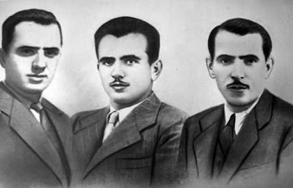
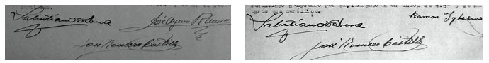
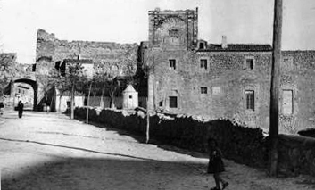

“Cuando usted escriba, nunca escriba mal de su pueblo” 1. Cita con la antigua cárcel de Cuenca. ("Tuve la sensación de habitar en un castillo desanidado y maléfico. El viento soplaba y golpeaba con inusitada violencia los envejecidos muros de la mansión. El ruido era macabro" (Vicente Vila, marzo, 1947). Un castillo con ínfulas de torreón. Descalzo, atrevido, con la mampostería a punto de suicidio, y terraplenes de vértigo arañando los costados de sus seis plantas, con patios separados a pie de calle en la tercera. Bajo cornisas de viento, hechuras de larga y pasada gloria ¿carlista?, si es que la tuvo, paredes azotadas por todos los males y ventanas destripadas por aquí y por allá. Su interior no mostraba mejor aspecto. Ni tan siquiera imaginándolo. Suelos desgastados, escaleras húmedas, rincones de sombra eterna, dinteles curvos, unas minúsculas oficinas y celdas espartanas, las de castigo en el sótano. Para acceder a su deterioro una garita policial, vejestorio portalón de madera y poco más. Con todo, allí se vivía y se esperaba. Habían pasado los tiempos de almacén humano, de la numerosa represión cuantitativa y cualitativa de los republicanos, de las sacas, de los traslados masivos en reatas bien a diligencias, bien a los tribunales militares con sede en la Diputación. Y hasta la muerte a garrote vil en su mismo vientre. Habían pasado, pero no hacía mucho tiempo de eso, un par de años a lo sumo. En 1945 tan sólo quedaba un preso con condena de muerte, Juanillo, a quien se le conmutaría, y bastantes otros de los últimos juzgados. Mas ahora, desde finales de 1944, llegaban otros inmerecidos huéspedes. Con aires de mejores tratos pues el II Guerra Mundial periclitaba y el Eje, tan fiel con el poder franquista, se iba desmoronando. Se suavizan los modos para no enervar a los aliados. Los nuevos habitantes provienen del sinvivir de la Causa General, de la represión policial, del control político en el resurgir clandestino de los partidos y de sindicatos prohibidos. De gentes que escuchan Radio España Independiente, de quien viaja a Francia o vuelve sin declararlo, de quien va de paso y se le supone con nombre fingido, de quien comenta que pronto caerá el Régimen manteniendo las esperanzas. En el primer capítulo de mi libro Los guerrilleros de Levante y Aragón he citado numerosos ejemplos. Los más detallados son los detenidos en La Peraleja, y los de Sotos, pero podría haber añadido los del sur manchego al hilo, sobre todo, de las cotizaciones para ayuda a los presos a través de Socorro Rojo y la activa presencia guerrillera en el triple enclave de Villarrobledo, Socuéllamos y Las Pedroñeras (V Agrupación de La Mancha). Con todos ellos se encontrará y penará el primer maqui que llegase al viejo caserón. En concreto, de los términos de La Peraleja, Olmedilla de Eliz, Huelves, Vellisca, Carrascosilla de Huete, Bonilla, Barajas de Melo y Tarancón ingresarán Adolfo Parrilla del Olmo, Ramón Pozuelo Montoya, Alejandro Pozuelo Montoya y Valentín Sánchez de la Torre, Anastasio Martínez Martínez, Dionisio Fernández Heras, Francisco Pastor Poveda, Anastasio García Rodríguez, Francisco Vicente Barrios, Antonio Ruiz González, Gregorio Sierra Yunta "El Cojo", Eugenio Martínez Gismero "El Geta", Gregorio Moreno Zapata "El Pocero", Luis Muñoz García "El Carabina". También desde El Campichuelo habían sido internados Agustín Carretero Raga, su hijo Agustín Carretero Romero, Tomás Abarca Soria, José Valiente Hidalgo, Julián Torralba Herraiz, Pablo Gil Cócera, Agustín Martínez Garrote, Estanislao de Marco Mora, Florentino Labatut Sevilla y Cirilo Pastor Delgado). (El día 30 de enero de 1945, a las 22,30 horas, entraba por la puerta, entregado por la pareja de guardias, a cuyo mando iba el sargento José Trujillo González, quien decía llamarse Ramón Iglesias Iglesias. Juan Gómez es el jefe de servicio de la prisión que recibe a Ramón Iglesias. En realidad se trataba de Eulogio Rodríguez González, pero esto se sabría tiempo después, a finales de marzo y primeros de abril. Figuraba como natural de Lugo, de 28 años, hijo de José y Pilar, con residencia en Barcelona, en la calle La Luna, número 18, soltero y de profesión albañil. No se registrarán muchas incidencias en su estancia penitenciaria en la cárcel de Cuenca. Apenas las reglamentarias del ingreso citado, todas ellas formadas por el director, el subdirector y el oficial del Registro. La ratificación de prisión por Auxilio a la Rebelión, dictada por el Juzgado Militar Permanente de Cuenca, a cargo del comandante de Infantería, Salustiano Cabeza de la Herranz, Juez de la Plaza de Cuenca, (el secretario era José Romero Castillo), el día 6 de febrero; el envío de la ficha Registro Índice, el día 8 de febrero igualmente, junto con la de Tomás Garrido Olmeda; la corrección disciplinaria del 10 de septiembre, que merece un más detallado comentario; y la salida para el Consejo de Guerra, el día 4 de diciembre, junto con Mariano Muñoz Magro a quien juzgan el mismo día que a Eulogio (Causa 131.529). El Testimonio de sentencia se recibirá el día 30 de diciembre, siendo condenado a la pena de 30 años (Causa 128.913). Ya el 16 de enero de 1946 se recibe la orden de conducción a Ocaña, que se efectuará el día 21 de ese mismo mes, a las cinco de la madrugada, junto con Clemente Cano Gómez (natural de Santa María del Campo Rus, detenido el 4 de abril de 1939, que había luchado en el frente del Jarama, y de alguna manera lo relacionaron, al igual que a su hermano Blas y a su hermana Luisa, con la acerada muerte por los falangistas de su esposo José Arribas García, y posterior muerte de uno de sus partícipes, Jesús Redondo, a manos de la propia mujer del fallecido) y Juan García Fernández "Cucalilla" (de Villamayor de Santiago, detenido el 2 de febrero de 1944). Detalle significativo del año de su estancia en la prisión conquense es el de las declaraciones que hubo de realizar ante el jefe de Información de la Comandancia, el sargento Matías Rodríguez Fiz, autorizado por el juez militar Salustiano Cabeza, con fecha 2 de febrero, y la riña sostenida con otro preso, Modesto Valverde Lozano, a quien daría un puñetazo tras negarse Eulogio Rodríguez a "dar una satisfacción al director de la cárcel" tras un plante colectivo de la población carcelaria a tomar el rancho del día 18 de septiembre de 1945. El sargento de la brigada de información de la Comandancia, Matías Rodríguez, autorizado por el juez militar, volvería a interrogarlo el día 6 de marzo, posiblemente en esta segunda ocasión tras la presencia de su hermano Agustín en Cuenca para visitarlo. Circunstancia que en su momento comentaremos, pues serviría para descubrir la verdadera identidad de Eulogio Rodríguez y para que su testimonio se aproximase a la verdad, pues en su primera manifestación apenas si había comentado que había participado, por reemplazo, en el servicio de Sanidad del Ejército Popular, durante apenas unos quince días. Que tras pasar a Francia estuvo trabajando para los alemanes en la Gran Comba y luego en unas carbonerías en el monte. Que los ingleses y Unión Nacional los movilizan tras el final de la guerra. Que su jefe de Brigada al pasar Los Pirineos se llamaba Gabriel y era natural de Avilés. Que en Viella se juntan con otra Brigada. Que tras deambular por Barbastro y Mediano se disuelven en unidades de quince a veinte guerrilleros. Y, por último, que se adentran en España sin misión alguna y por amenazas de sus jefes, pues de lo contrario serían fusilados. La realidad, como veremos no fue exactamente así. Y ni tan siquiera la justificación que diese cuando declarase que esto lo hizo para que no molestasen a su familia, parece corresponderse con su situación en tales momentos). (El incidente de castigo en el mes de septiembre, lo recoge el informe que el funcionario José Mojo redacta y dirige al director: "El jefe de Servicios que suscribe tiene el honor de poner en conocimiento de VS que próximamente a las once horas cuarenta y cinco minutos de hoy denuncia el recluso Modesto Valverde Lozano que a las nueve y media del mismo día, estando en la segunda celda del departamento primero, el también recluso Eulogio Rodríguez González le dio un golpe en la boca con el puño cerrado que le produjo gran hinchazón, extremo que pudo comprobar el que suscribe. Al indagar el motivo de la agresión se ha comprobado que ambos reclusos discutieron sobre la justicia de dar una satisfacción al sr. Director respecto de la actitud adoptada por gran parte de la población reclusa el día 18 anterior cuando se negó a tomar el rancho, afirmando el Modesto que dicha satisfacción debía darse y el Eulogio sosteniendo lo contrario. Por lo expuesto he procedido a recluir en celda de aislamiento al citado recluso Eulogio Rodríguez González hasta que VS resuelva en definitiva lo que crea más conveniente. Cuenca, 29 de septiembre de 1945"). (Fue ya a punto de cerrar la edición de mi primer tomo de Los guerrilleros de Levante y Aragón (5/4/2007) cuando pude entrevistar por teléfono a Eulogio Rodríguez González. Yo en Valencia, él en Espiñeiro, aldea de Carracedo (Orense). La localización y el acierto en conseguir su plácet se lo debo a Manuel Martínez. Incansable y generosa su labor de saber del maquis y situar su vida en los ámbitos reales de unos montes que él y su compañera Puri tan bien conocen, y mejor aprecian y viven. Todo un acto generoso de amistad. A Eulogio le sorprendió la llamada, ni la esperaba ni la temía. No era hombre de miedos y sí de principios, amaestrados con la vida, con lo que tuvo, dejó y pudo recuperar. Me impactó su palabra, su discurso y su simpatía. Le hubiese acompañado en sus días de hielos. Tampoco era un hombre de silencios, pero las imaginadas y hasta perseguidas medallas, por otros, a él se le quedaron enterradas en la nieve. Fue su mujer Carmen Tresguerras, a la que tristemente no llegué a conocer y que fallecería de infarto en 2010, en la estación de Sants, en los brazos del propio Eulogio, quien le animó con palabras parecidas a estas: "Pero chico, habla con ellos, que sepan de tu vida, y de tu familia". "Es gracias a ella que hable con vosotros. Pero antes yo me informé, supe que erais buenas personas", me repite en varias ocasiones. De aquel testimonio telefónico extraje los datos sustanciales de acción y recorrido vital, y que completé con el expediente de cárcel y con algunas visitas sobre el terreno tal como figuran en mi libro citado. Y ahora tengo que abrir otro punto). (Como principio y norma, siempre que he buscado un dato lo he hecho siguiendo los cauces oficiales reglados y las vías humanas. En tal decurso he encontrado personas atentas y profesionales bien capacitados. Pero el hilo de lo descrito en los párrafos anteriores nos lleva de la mano al expediente de prisión de Eulogio Rodríguez, y en este caso la exquisita atención de los responsables del Archivo Histórico del centro penitenciario de Cuenca ha sido siempre digna de agradecer. Tampoco debió de ser pesada mi carga cuando amablemente me invitaron hace un par de años, y así se hizo, a dar una charla a los internos, y precisamente sobre la guerrilla antifranquista. La atención fue inmensa y las preguntas de lo más curioso. Todos los asistentes sabían de armamento mucho más que yo). (Pero este largo artículo para la revista Entremontes no hubiese sido posible si de nuevo el azar, objetivo, en pie por el ya nombrado y estupendo amigo Manuel Martínez, no se vuelve a materializar de nuevo en forma llamada telefónica. "Oye, sabes que el guerrillero de La Huerta de Marojales, Eulogio Rodríguez, está vivo y reside cerca de Valencia. Además, que quiere subir a La Serranía y recorrer estos pueblos, con 95 años. Su hijo está preocupado. Llámale". Habían pasado cuatro años desde la anterior conversación. Yo, acostumbrado a las despedidas tristes (nos habían faltado "Grande", "Carrete", "Teo", "Chaval", "Celia", "Rubio", Salazar), ya casi no lo tenía en mente. Y más echándole 90 años bien cumplidos y siendo, por ende, el primer maqui preso en la cárcel de Cuenca, el único superviviente de la primea expedición que llegó a los montes del Sistema Ibérico, luego tan poblados de guerrilleros y enlaces y guardias civiles. Y descolgué el teléfono, y marqué su número. Y desde entonces lo he hecho con asiduidad). (Durante los días (4, 7 y 14 de mayo, 2011), por la tarde, pudimos charlar de sus recuerdos, de forma tendida y ordenada. En la casa de su hijo del pueblo de los Valles, en Quartell. Me trasladé desde Valencia. En una de las idas una tormenta de lluvia acortinada y oscuridad profunda acompañó el rumor mental de mis preguntas. Hasta el mar Mediterráneo, que normalmente acuna parte del trayecto de la carretera, aquel día parecía atormentarla con pesadillas de enfebrecida rabia, como una memoria que no adolece de cumplidos y se identifica con el rumor de voces libres. Pero podía más la sugestión del relato, de la añoranza reivindicativa de unas gentes que vivieron su momento de protagonismo con la causa común de la dignidad colectiva. Buena parte, por no decir toda, de esta nueva entrega para la revista Entremontes se debe a los pasajes hilvanados de aquellas charlas. Me encontré con una familia joven acogedora, la de su hijo Agustín. Y también con un hombre mayor, con genio y actividad, consumado lector y conversador ágil y de principios asentados. Había estado otra vez recorriendo aquellos pueblos de su lucha, con el disimulo de vendedor de máquinas de escribir. Y ahora insistía que aún quería volver para agradecerles a aquellas gentes, supongo que a sus descendientes, el buen trato que le otorgaron, a pesar de las inclemencias, del sufrimiento y la muerte. Y como norma, todos sus recuerdos van sin encasillar, no así todo el aparato complementario recogido en otras entrevistas, libros sobre el movimiento guerrillero, páginas de Internet y diversos archivos, que para no confundir al lector, son textos míos y los he encorchetado. Sirva pues este aclaración como norma de lectura). 2. La infancia, la juventud y otras edades. Nací en 1916, el 14 de septiembre de 1916, en Vilar de Carracedo-Espiñeiro, municipio de La Peroxa (Orense). Allí tenían la casa mis padres Agustín y Pilar, tengo 94 años. Éramos 7 hermanos: Manuel, Agustín, Antonio, Eulogio, Custodio, Josefa y Agripina. Nosotros nos dedicábamos al comercio en Asturias. Teníamos la casa de la aldea de Espiñeiro donde vivían mi madre y mis hermanos pequeños. La casa era grande, con una era para el grano, se entraba en llano, con tres o cuatro vacas, tres o cuatro cerdos, muchas gallinas, como son las casas en Galicia. Aquellas aldeas son casas, de ocho diez vecinos, y forman unas parroquias, y antes estaban muy pobladas, y ahora tienen que tener un cura para varias. El Vilar estaba al lado de Espiñeiro, esas dos aldeas y otras muchas formaban la parroquia de Carracedo. Gente no queda, pero curas aún van quedando demasiados. Sobran los curas. La carrera de cura no es gran cosa tampoco. La otra casa la teníamos en Asturias, en Sama de Langreo. La casa aquí era alquilada. Allí mi padre, que también había estado en Portugal, tenía una tienda y vendíamos tejidos, y en La Felguera. Yo me afilié a la CNT, y me formé en La Felguera, que era el centro anarquista y minero. Mi padre tenía una tienda en Sama y también vendíamos de manera ambulante por los pueblos y aldeas de la zona. Se vendía al mes. Hoy se vendía y se cobraba al mes. Vendíamos a los mineros que eran los que más ganaban. Había mineros que ya ganaban 300 o 400 pesetas, cuando el sueldo corriente era de 10 o 15 pesetas. Los mineros nunca ahorraban un céntimo. De lo único que se cargaban era de silicosis. Mi padre y mis hermanos mayores estábamos en Sama. La mercancía la trasportábamos en caballos. Recuerdo la llegada de la República como una fiesta. Estaba todavía en Galicia y era un chavalito. Fui un chavalón normal, muy infantil, no tuve muchos ligues. En Asturias fue muy feliz. Al País Vasco, Asturias y Cataluña los admiro. Conmigo siempre se han portado muy bien. En la casa de Galicia se quedaban la madre y las dos hermanas, y mi padre cada vez que venía le hacía un hijo. También estuvo en Portugal, y lo mismo, mi madre tuvo ocho hijos. Mi padre llegaba, estaba un mes o dos, miraba la finca y se marchaba. Yo me he hecho otra casa en Galicia. Tengo animales, árboles, gallinas, pero gallina que pongo gallina que se me comen los jabalís. Y algo de tierra con maíz sembrado. Mi mujer, Carmen Tresguerras, hermana de la de Custodio de nombre Liberada, con la que me casé en 1966 y a quien le llevaba 16 años, se me murió en los brazos en la estación de Sants. Y no me dijo ni adiós. Vivíamos allí, en Espiñeiro. Y viajábamos a Barcelona o aquí a Quartell en tren donde vivían mis tres hijos. De chavalote comía como un caballo, jugué a los juegos de entonces, las travesuras no las hice hasta que no tuve 18 años. Fui a la escuela en Carracedo, que había un maestro que era comunista, andaluz, y al estallar la guerra lo pusieron en camino para su casa y allí mismo lo mataron. Era muy buena persona, sacó a muchos chavales del analfabetismo. Íbamos chicos y chicas juntos, seríamos unos 30. ¿Cómo matarían a una persona así? A los 18 años me llamó mi padre para que le ayudase en la venta por los pueblos. Vendía ropa, calcetines, bragas, paños. Nos abastecíamos en los almacenes de Oviedo, donde había grandes almacenes al por mayor, y nosotros comprábamos como intermediarios. En Sama, Sotrondio, Las Quintanas, Pola de Laviana, y todos esos pueblecillos tenía amigos, porque por allí iba a vender los trapos. Dormíamos en la pensión si había, si no en casas particulares. Lo primero, cuando se hacía de noche, como nos conocían por todos estas montañas, "no se vaya, quédese aquí", era un gente muy hospitalaria. Algunos sábados íbamos al cine, cine mudo, de Chaplin, ya se pasó a la historia, y lo amigos todos están muertos, íbamos al baile, le levantábamos la saya a alguna moza, yo me casé cuando vine aquí a Barcelona, a mi mujer le llevaba yo 16 años, y era hermana de una cuñada mía, la mujer de mi hermano Custodio. En Sama todos los hermanos vendíamos por nuestra cuenta, y luego hacíamos números con nuestro padre. Yo desde los 16 años. A los cuatro hermanos y a mi padre nos cogió la guerra en Sama. A mí me afilaron a la CNT, en La Felguera, Sama está casi junto. Y ya siempre he continuado en la CNT, y a mis hermanos también los afiliaron o se afiliaron. La CNT era muy influyente en toda aquella zona metalúrgica. Entonces uno se afiliaba a un partido o un sindicato por simpatía. He conocido dos zonas extraordinarias: Aragón y el Norte. En Aragón pasamos de guerrilleros, y podemos decir que la nobleza baturra es por algo, no es un capricho, ¿eh? Porque por donde quiera que llegáramos, en Tierrantona estábamos 300 guerrilleros, por donde pasábamos los dejábamos pelaos. Es como si apareciera la langosta, porque nos repartimos tres o cuatro o cinco en cada casa. Vista esa agrupación que éramos 30.000 españoles que en Francia estábamos organizados, (en Francia percibían 500 francos mensuales de las FFI) que no es una broma como mucha gente cree, pues fíjese bien, llegábamos a un pueblecito de esos de Aragón donde eran 10 o 12 casas y los hombres daban todo, y los dejábamos pelaos. Entonces acordamos entre Joaquín Arasanz "Villacampa" y nosotros que esto no puede ser. (Joaquín Arasanz Raso "Villacampa", el famosos maqui altoaragoneses, nacido en 1917 en La Pardina, coincide con Eulogio Rodríguez tanto en la operación del Valle de Arán, como en la cárcel de Burgos. Habían entrado en España el 4 de octubre de 1944, en el marco de la "Operación Reconquista" con la Brigada 21 de la 204 División, comandada por el asturiano Gabriel Pérez, y en la que Arasanz tenía el cargo de comisario político. Su misión era la de tomar diversos pueblos de la Fueva: Rañín, Tierrantona, Morillo-Monclús, Formigales. Se concentraron a principios de octubre de 1944 en Sentien, a diez kilómetros de la frontera. Tras superar los obstáculos montañosos del Pirineo francés subidos a las vagonetas de una explotación minera de Bentaillou y el día 4 de octubre entraron en España por el Valle de Arán, en medio de un intenso frío y una fuerte nevada. Debieron cruzar el puerto de la Bonaigua para dirigirse al Hospital de Viella, donde desarmaron fácilmente a los vigilantes y liberaron a los presos políticos que trabajaban en la construcción del túnel. Pero los liberados comenzaron a correr en dirección a Viella escapando de los propios guerrilleros. Tras un primer encuentro sin víctimas con el ejército, se dirigieron hacia el sur y en el desvío que lleva a la localidad de Bono detuvieron a un grupo de soldados al que luego dejaron marchar. Una patrulla de guerrilleros entró en Senet, primer pueblo de la provincia de Lérida, e hizo prisioneros a un capitán y a dos soldados. En un posterior tiroteo con la guardia civil uno de los guerrilleros resultó gravemente herido. Sus compañeros lo llevaron consigo en su retirada, aunque murió poco después y fue enterrado en el cementerio de Benasque. La partida de "Villacampa" se dirigió más tarde hacia Vilaller. La presencia de fuerzas militares obligó al grupo a ocultarse en los cercanos bosques de Castanesa. Según Arasanz, este fue el primer pueblo de España tomado por los maquis. Reunieron a la población y dieron un mitin en la plaza. Desde allí tomaron rumbo a Laspaúles y se refugiaron en un molino cercano a esta población. Siempre hacia el suroeste, decidieron buscar refugio en los montes próximos al pequeño pueblo de Merli. Entraron en la localidad, cenaron y se repartieron por sus casas para dormir. Desde allí se encaminaron a Bacamorta, donde, según recuerda Arasanz, el médico del grupo operó con éxito a un niño del pueblo que tenía las anginas muy infectadas. Su intención era dirigirse a Morillo de Liena, pero en el camino recibieron aviso de que los militares estaban llegando a esa población. Pudieron, sin embargo, cruzar el río Ésera y llegar hasta Navarri, desde donde buscaron refugio en la sierra de Campanué. Explica "Villacampa" que colaboradores de Morillo subían comida a los guerrilleros escondida entre el estiércol, dentro de los "esportones" de sus caballerías, y diciendo a los militares que hacían guardia junto al río que iban a echar "fiemo" a los campos de labor. Desde Campanué los maquis ya divisaban el valle de La Fueva. Puede decirse que durante varios días de aquel otoño del 44 buena parte de La Fueva fue ocupada por los maquis, que camparon a sus anchas por algunos de sus pueblos. Fue Rañín el primero de ellos. Arasanz y los suyos se presentaron en otros pueblos de La Fueva, como Solipueyo y Buetas, y entraron finalmente en su capital Tierrantona. Era un sábado por la mañana. Una especial relación tuvieron los guerrilleros con el cura del lugar mosén José Lalueza, que era natural de la vecina Abizanda. Pero la tranquilidad de esos primeros días se acabó pronto. Se encontraban los guerrilleros en Morillo de Monclús cuando una noche, casi al amanecer, fueron sorprendidos mientras dormían por una compañía de militares que había subido en su busca desde Mediano. Tres maquis cayeron abatidos por los disparos del ejército. Dos militares, ambos soldados de reemplazo, resultaron gravemente heridos en la refriega y fallecieron poco después: uno en el mismo pueblo y el otro al ser trasladado a Barbastro. Algunos guerrilleros se escondieron en cubas, pajares y hornos de cocer pan. La mayoría escapó por el barranco de Formigales para replegarse luego hacia Pallaruelo. En Pallaruelo les llegó a los guerrilleros la orden de retornar a Francia. Se dirigieron a Foradada del Toscar, se aprovisionaron en Viu, atravesaron Cotiella y alcanzaron el Hospital de Gistaín para cruzar la frontera soportando las fuertes nevadas y los intensos fríos del mes de diciembre de 1944. Pero antes, seguramente desde Pallaruelo, varias unidades del grupo ya se habían desgajado con orientaciones nuevas. Una de ellas sería la formada por Eulogio Rodríguez y sus compañeros. Joaquín Arasanz "Villacampa" volvió a entrar en España a finales de 1945. En enero del 47 fue detenido en Huerta de Vero y condenado a la pena capital que luego le fue conmutada. Salió de la cárcel en 1963). En Asturias vendíamos bragas, fajas, zapatos, ropa de muchas clases, monos de trabajar, calcetines, de todo; y mi otro hermano, el que se fue a Montevideo, ¿sabe lo que vendía?, pistolas. –"¿Pistolas?" -Claro, hombre, antes se vendía de todo, pistolas del 7 largo, del 9 largo, las vendía por los mismos pueblos, eran tabernas lo que había, no fondas. Le ofrecían lo mismo que a nosotros, que a mí. Las casas no eran como las de ahora, le ofrecían un tazón de leche y alguna otra cosa y ya estaba. La pistola se vendería por 20 pesetas, las bragas a dos reales, a casi nada, si antes el jornal de un obrero no llegaba ni a diez pesetas. Yo tenía 170 hojas escritas de mi vida y las quemé. A mí me gustaría ser el soldado desconocido. El maquis desconocido. Si usted está escribiendo esto es porque mi mujer me animó, y me dijo: "¿Por qué escondes tu nombre?". El guerrillero desconocido, ese soy yo. La verdad es que encontré muy buena gente en las montañas de Cuenca. Cuando me detuvo la guardia civil, yo, con las piernas heladas, estaba tumbado en una mesa, y una noble señora les decía: "Estos hombres no pueden ser de mala madre, porque hablan a todo el mundo con educación", y uno de los guardias gallegos todo lo contrario: "A este, nada más que llegue a Cuenca le van a pegar más tiros que a un bote". Fíjate qué barriga se me ponía pensando en cómo se me preparaba el asunto. Yo, escuchando, hacía que roncaba, y la mujer que se exponía a que los llevaran a Cuenca a todos de cabeza. Al Corzo yo lo saqué cuando declaré que no tenía nada que ver. Le dije al juez: "Si a usted le cojo yo en Cuenca con una metralleta, usted me da todo lo que yo le pida, hasta el culo, antes que le pegara el cargador en el pecho. Esta gente está aquí, ¿por qué está aquí?, ¿porque llegué yo a su casa? ¿No estoy yo aquí para responder?". Y lo soltó al Corzo. El jefe de la guardia civil había dado una orden, o el gobernador: "¡Ojo a todo guardia que se le ocurra matar a un maqui una vez cogido prisionero!". Y me respetaron. Pero resulta que cuando yo estaba allí ronqueando, dicen que roncaba, escuchaba la conversación. Decían: "Éstos, éstos". Llegué a Cañizares, al pueblo donde me llevaran, donde enterraron a mi hermano, y salió el pueblo, todas las mujeres recibiendo a los guardias como si vinieran de la batalla del Ebro. Allí gritando, y me recuerdo que en el ayuntamiento había un secretario de mierda que decía: "A este hay que fusilarlo". Y el comandante de la fuerza le dijo: "Le pego a usted una patada en los huevos, y lo pongo en la calle, este señor tiene más huevos que usted". Yo creía que decía aquello para que yo declarase, pero debo decir que tuve la suerte de que había un jefe de la fuerza que les dijo a los guardias: "A este señor le coge la Convención de Ginebra". ¡Pero si no se hablaba de la Convención de Ginebra con Franco! 3. Mis hermanos y la guerra civil. Agustín estaba en Francia trabajando, era conductor de camión, y regresó a España durante la guerra con las Brigadas Internacionales, en la convocatoria que hizo la CNT. Y durante la guerra conoció a una chica, Soledad, en Sardañola y se casó con ella. En Asturias quedábamos pues mi padre los tres hermanos y mi cuñado, el marido de Josefa. Cuando llegó la guerra yo me encontraba vendiendo, engañando a la gente, bueno a las mujeres, con los trapos, por los montes de Asturias. Y dejé los trapos y me fui al frente con un grupo de milicianos, a Luarcas, rayando con Asturias, con la CNT. Me fui voluntario, mis hermanos también. Mi padre no, mi padre ya era mayor. Tendría más de 60 años, murió a los cien. Y luego siempre de culo para atrás. Mi otro hermano, Antonio, que había nacido el 28 de octubre de 1914 en Espiñeiro de Carracedo, estaba haciendo la mili en el Regimiento Simancas de Gijón (Regimiento de Infantería de Montaña "Simancas", al mando del coronel Antonio Pinilla), e iban a poner estado de guerra, y encañonaron a su capitán, al capitán Castillo, y lo llevaron encañonado a la Casa del Pueblo, junto con la compañía. Y mi hermano Antonio llegó a ser comandante de un Batallón. Pues como estábamos en una zona minera había un ambiente muy progresista. (En vísperas del levantamiento, ocupaba el cargo de Comandante Militar de Asturias el coronel Antonio Aranda, y las unidades del Ejército a su mando se agrupaban en Oviedo y en Gijón. En Gijón, tenían sus cuarteles el Regimiento de Infantería de Montaña "Simancas", con unos cuatrocientos hombres y el Octavo Batallón de Zapadores-Minadores. El Comandante Militar de Gijón era el coronel Antonio Pinilla Jefe del Regimiento "Simancas". En el interior del cuartel del "Simancas", en la tarde del domingo 19 de julio, el capitán Nemesio González amotinó a su Compañía, y por tal causa hubo de suspenderse la salida de la fuerza. Conocedor del hecho el coronel Pinilla, arresta al capitán González y le sustituye por el capitán Leoncio Rivas. Cuando en la madrugada del lunes, día 20, se echaron las tropas a la calle, el Frente Popular había tomado ya sus disposiciones: en el Cuartel de Asalto se repartieron armas a las milicias gijonesas, engrosadas con columnas llegadas de La Felguera; y se habían concentrado en la ciudad las fuerzas del Cuerpo de Carabineros, leales al Gobierno. Para cubrir los objetivos señalados, de sublevarse, salieron a la calle dos Compañías del "Simancas" donde se cuenta con 413 hombres, la 1ª del capitán Rivas y la 3ª del capitán Ángel Hernández del Castillo, más una sección de la guardia civil y dos secciones de Zapadores. Deberán declarar el estado de guerra, apoyándose, y al tiempo ocupar la Casa del Pueblo. Los suboficiales de la 3ª Compañía de Infantería desarmaron al capitán y al teniente, y apostada la fuerza en las inmediaciones del cuartel, se abrió fuego contra éste. Detrás de la 1ª Compañía parte la 3ª, la de Hernández del Castillo. Pero al poco de pisar la calle, un sargento se insubordina contra el capitán, el cual abandona a sus fuerzas, marchando al cuartel; entonces el brigada Eulalio Mateos, ayudado por dos cabos, inmoviliza al teniente don Godofredo Santa Clara, que trata de oponerse, acabando por marchar igualmente al cuartel. La Compañía, ahora al mando del citado brigada, llevándose dos morteros, llega a la Casa del Pueblo, donde es recibida triunfalmente. En Simancas es detenido Hernández del Castillo por el teniente de navío don Ángel Riva. Los Asedios, op. cit.). Manuel Otero era uno de los responsables de nuestro Batallón. Fuimos reculando, reculando hasta Oviedo. Avelino Fernández Cabricano (Langreo, 1914 -La Felguera, 2006), Tomás Belarmino (Aguilar de Campos, 1982- México, 1950), y todos los altos dirigentes asturianos; y yo, como vivía con ellos, pues era uno de ellos. En la cuenca minera era difícil encontrar alguien de derechas, si era católico se le respetaba. De paisano y con un fusil a defender a la República. Más tarde se fue organizando el ejército regular. Y se nombraron oficiales. Retrocedimos hasta Oviedo, vinieron los moros, todos los moros que había traído Franco y los gallegos. Me pasó un caso curioso, he llorado como un niño. Atacamos una posición y la cogimos. Y encontré muertos a dos amigos del pueblo, uno era Fernández y el otro José, y al reconocerlos se me salían las lágrimas. Me encontró el comandante Terol y me dijo: "¿Pero qué te pasa, Eulogio, tienes miedo?", "No, me pasa esto, esto y esto". Dice: "La guerra es así. En la guerra hay que matar para que no nos maten, tienes que hacerte a la idea de que eso te puede pasar mañana a ti y hay que echarle corazón. Yo también sufro cuando veo…, y hay que echarle corazón. Y hay episodios de esos que dices, vamos…". Por el Naranco, por San Estaban de las Cruces, en el cerco de Oviedo, en Collote, y allí cuando atacan por el norte, por la zona de Bilbao, nos traen a Bilbao, entonces…. Estaba entonces en el batallón Matteotti y otros dos y vinimos a Bilbao. (La Columna italiana de nombre Centuria Giustizia e Libertà, también conocida por Prima colonna italiana, Batallón Matteotti, Colonna Rosselli y Legión Italiana de la Columna Ascaso por haber marchado al frente con dicha unidad de voluntarios, fue una de las primeras unidades que se pueden considerar adscritas a las Brigadas Internacionales. Estuvo al mando el socialista italiano Carlo Rosselli, con el apoyo de Mario Angeloni, Antonio Cieri y Camillo Berneri). Hubo varios responsables, Fernández fue uno de ellos. Cuando llegamos a Bilbao era la desbandada de las tropas republicanas ante el ataque de las tropas sublevadas franquistas. Llegamos al alto de Barata y a la Gramesura, a la cordillera desde donde se ve Bilbao. Bilbao era muy pequeño, y allí, recuerdo toda mi vida que llegamos allí, y aquellas masías, es mejor que la gente no conozca nada de cuando entraban los nacionales. Después de haber vendido dos vagones de estraperlo, qué cojones venía yo a hacer a Cuenca, coño. Yo iba a comer a Los Caracoles, muchas veces, al Siete Puertas, a la Casa Juan, cuando nadie comía pan blanco yo comía el que quería. Amo Cataluña por una razón, porque los alcaldes que tuvo Sabadell…. Le voy a contar un caso curioso. Una vez nos cogieron un vagón de estraperlo, de los veintitantos que hicimos en un par de años, nos cogieron uno y su mercancía la depositaron en el almacén del ayuntamiento de Sabadell. Era Marcet (Josep Maria Marcet i Coll (1942-1960, alcalde de Sabadell) un fascistón el alcalde, y mi hermano Agustín, como era un tío y yo tan aventurero, éramos aventureros, que no me pesa desde luego… "Hay que ir a hablar con el alcalde". Y llegamos, y el señor Marcet, uno de los más ricos de Sabadell, con fábricas, y llegamos y quisimos hablar con él y el de la puerta: "No se puede hablar con él". Pero pasamos. Y le dijo mi hermano: "Señor Marcet, venimos aquí porque no hay derecho con el hambre que hay… Entonces había la enfermedad del piojo verde, moría la gente de hambre en Barcelona y se decía que era el piojo verde, porque cobraba un hombre diez pesetas y costaba un pan de a kilo, que lo vendía yo, diez pesetas. Una barra de pan, que no llegaba al kilo valía lo mismo que ganaba un obrero en Barcelona. "Que pase ese individuo". "Señor Marcet…, tiene usted un vagón pudriéndose en los almacenes del ayuntamiento (trigo, harina, de todo)". "Vamos a hacer un trato" dice el señor Marcet, "mitad para ustedes y mitad para la casa de la Caridad". "Encantado, esos cinco". Salimos y recuperamos la mitad. Mi hermano, el que murió en Uruguay, le dio la mano. Nosotros tirábamos el dinero. Decíamos: "Esto no va a valer". Agustín entró en Teruel cuando la batalla y cogieron en el banco un montón de billetes. Y se limpiaban el culo con ellos. Eran billetes de los que valieron después. Y hubo una señora, Raimunda, a la que le dieron uno, y terminada la guerra y mi hermano Agustín pasando hambre, lleno de piojos en la plaza de toros de Pamplona, la otra fue a la tienda y con 500 pesetas le dieron un cesto de comida que alimentó a la mitad de los presos. Hubo un combate. Yo tengo la desgracia de que en las campañas suelo durar poco. En Bilbao cercaron el Cinturón de Hierro (el 11 de junio de 1937 cae el Cinturón de Hierro, el 4 de abril habían acudido a defender Vizcaya cuatro Brigadas asturianas), pasaron por atrás, quedamos unas docenas, parlamentaron: "Si os entregáis vais a ir a una casa de salud", que después Millán Astráin dijo: "¿A una casa de salud?" Y nos llevaron a Victoria. Allí estuvimos tres días en una cuadra y en tres días no vimos nada de comer. Requetés y los que había de escolta nos custodiaban. Y desde allí nos llevaron a Miranda de Ebro, a un convento. Medio tren con nosotros y medio tren con presos de ellos que habían estado en las cárceles republicanas de Bilbao. A ellos los llevan a buen sitio en Vitoria, y a nosotros a una cuadra. Después nos llevan a Miranda de Ebro. En el convento de los Sagrados Corazones de Jesús, los conventos han sido siempre sitio de presos. A ellos venga a subirles bandejas de comida y a nosotros nada, menos mal que era verano y en el patio no hacía frío. Estábamos a granel, en el patio tiraos como trapos. Éramos vascos, asturianos, santanderinos, todo gente del norte, y algunos de los que estaban trabajando en esa zona que eran de otra parte de España. Hasta que un oficial vasco nos dijo: "Esto lo voy a arreglar yo, a organizar y que os den comida". Un vasco. He pasado por penales, pero no he visto gente más entera que los vascos. Lo he podido saber a través de la cárcel de Cuenca, de la de Ocaña, de la de Madrid y la de Burgos, donde más tiempo estuve. Aún recuerdo, en Miranda de Ebro, cuando paseábamos la reata de presos hacia el convento, a un chavalito de unos diez años, diciendo: "Mamá, pero si los rojos no tienen rabo". ¡Qué mentalidad les daban a los niños!, y un vasco le dijo: "Lo llevamos entre las piernas". Los peores escoltas que tuvimos eran gallegos. En Alcalá de Henares, en las varias huelgas que había en la cárcel de cuatro y cinco días sin comer, nada más que vieran sacar el pañuelo a la ventana ya estaban disparando. Tuvieron que sacar a los gallegos de escolta porque descargan una ráfaga de metralleta o de fusil pero cagando hostias. Los mejores guardias que hemos tenido han sido aquellos viejos canarios. Eran de las quintas ya más viejas, hablaban así, aplastadamente, si les pedíamos que nos trajeran un litro de vino: "Hombre, mire usted, no me comprometa". Era la mejor escolta que tuvimos. Los otros eran todos unos tiranos, unos idiotas, unos pobres diablos que no sabían ni lo que hacían. Desde Miranda de Ebro, cuando la batalla de Brunete, me llevaron de pico y pala a un Batallón de Trabajo, al nº 1, a hacer trincheras para los franquistas. En Carabanchel teníamos el lugar donde dormíamos. Cada dos presos un soldado de infantería vigilándonos. Íbamos formados a trabajar y cantando lo que les daba la gana a ellos. Un día un preso asturiano, mientras estábamos haciendo trincheras, saltó, tuvo dos cojones, y a pesar de estar vigilado, saltó y se fue al bando republicano, que había unos 100 metros de trinchera a trinchera. Y al llegar al cuartel a los dos de fila que tenía al lado: "Usted y usted", Ángel Riaño y Rafael Lezama se llamaban, los fusilaron delante de nosotros. Sin ninguna denuncia ni nada, como escarmiento simplemente. Y uno de los oficiales, que era carabinero, se marchó luego, porque no podía soportar aquello. Y después nos hicieron cantar el Cara al Sol. Y más tarde, un hermano de uno de los fusilados, que estaba en la Legión, al saber que lo habían fusilado tan aleatoriamente, rompió las insignias que llevaba, se revolcaba por el suelo. Y por otro caso parecido a ocho, en Bosque Bajo, cuando estaba en el Batallón de Trabajadores, después de los dos de Carabanchel. El general Andrés Saliquet estaba al mando. Él tuvo que ordenarlo. Aquello no podía ser ordenado así por la cara. Uno de los oficiales que mandó aquello pidió la baja al poco y se marchó del Batallón. En el Batallón de Trabajadores cuando se libró la batalla de Brunete fuimos allá, a la segunda o tercera línea a fortificar, después de allí vinimos al cinturón de Madrid, por todo Carabanchel, Alto y Bajo. Nos dedicábamos muchas veces a destruir casas para que tuvieran ellos menos campo de tiro. Cada pareja de presos iba con otra pareja de soldados. A la mañana salías con un vaso de agua a cantar el Cara al Sol. Terminé cargando proyectiles de batería en un pueblo cercano a Aranjuez. Ahí ya estaba en libertad condicional pero tenía que presentarme al pueblo. Tras fortificar Brunete y otros sitios de Madrid y otros Batallones de Castigo, el último el 155, el de Unamuno, pero antes también había estado en el Hospital cárcel de Getafe, cuando quedé en libertad volví a casa donde se hallaba huido mi hermano Antonio, pues terminó la guerra en Asturias y se escondió en los alrededores de nuestro pueblo. Y de nuevo durante unos años me dediqué a mi oficio de vendedor ambulante de tejidos en Sama y León. 4. Huidos en Galicia. Luego, ya acabada la guerra, pude marcharme a Galicia, a mi pueblo. Allí me encontré que había muchos huidos, que estaban cazando a tiros por las montañas la guardia civil y las patrullas. Entonces quisimos organizar una resistencia. Estaba el famoso "Foucellas", el teniente coronel "Riqueche" (Adolfo Allegue, conocido como "Riqueche", natural de Grandal en 1919, y fallecido en Monfero en 1949, que mandó el destacamento "Arturo Cortizas"), y el "Teniente "Freixo" (de Lisardo, Freixo López, fallecido en Aranga en 1946, quien también había luchado en el frente de Asturias), estaban en el monte. Eran de la clase trabajadora, no eran millonarios, y se veían negros, pues donde los veían se chivaban de ellos. Y nosotros, mi hermano Antonio, que cuando cayó en Asturias, al terminar la guerra allí, les dijo a los soldados de su compañía: "Muchachos, que cada uno se salve por donde pueda". Y él se fue andando hasta Galicia desde Asturias. Desde Sama de Langreo hasta nuestra casa en Orense, por la montaña andando. Y aunque le pasaron ciertos casos por el camino, llegó a Carracedo y allí se ocultó, en casa, y salía de noche y se acostaba de noche en el campo. Y había vecinos que querían saber de él para chivarse, pero el único que sabía de él era el cura. Desde un principio. El cura de la parroquia lo casó a Antonio en el 40. Siempre sabía dónde estábamos nosotros. He hicimos banquete y todo. Y el otro hermano, el Agustín, que se marchó a Uruguay, le dejó la documentación a Custodio tiempo después. Y entonces él se fue a trabajar a Barcelona con la documentación de la fábrica de Agustín, en una serrería. Pero los mismos compañeros de trabajo lo denunciaron al patrón. "Éste no es él". Por los puntos, por los cochinos puntos. Pero el amo lo defendió y les llamó sinvergüenzas a los que le habían denunciado. Cuando yo vuelvo al pueblo allí estaba mi hermana y mi padre que en la cárcel se quedará ciego. Mi madre falleció estando yo preso durante la guerra. Antonio estaba escondido. Manolo se dedicaba al comercio en Sama. Custodio se escapó con el nombre supuesto de Agustín algo más tarde. Cuando vuelvo a Galicia y veo el ambiente que hay… Mi padre se quedó ciego en la cárcel, murió mucho más tarde. La miseria era asquerosa en Galicia en aquella época. Yo emigré porque toda la gente que había en el monte, el teniente "Riqueche", el "Carolo", habían cogido un camino un poco indisciplinado, en el sentido de que a veces cometían actos que no eran propios de los fines de la idea. Y por eso determinamos irnos a Cataluña. Toda la gente de izquierdas estaba perseguida. Abríamos trincheras desde Carabanchel Bajo con un batallón de Zapadores. Y un buen día los dos fusilados. Tras el asalto de un asturiano. Íbamos y volvíamos formados, cantando lo que quería, el Cara al Sol. El oficial de Carabineros fue el que sacó a los dos, con un piquete que los fusilasen delante de nuestro Batallón. Antonio estaba de soldado en el Simancas de Gijón. Y cuando el capitán Castillo se quiso sublevar, entre él y otros lo encañonaron. Y lo llevaron a la Casa del Pueblo. Mi hermano Antonio se incorporó a las milicias y terminó de capitán o comandante en el Frente de Asturias. Cuando ya acabó la guerra en Asturias se vino andando a casa, a Orense, y estuvo escondido (el 21 de octubre de 1937 entran en Gijón las Brigadas Navarras y desaparece el Frente Norte). Y estuvo ayudando a formar las guerrillas en Galicia. Pero había muchos infiltrados. Y otros muchos también abandonaron al darse cuenta de que la guerrilla no era un baile de gachís. Aun estando semi huido se casó, y por la iglesia, en Carracedo, con Adelaida del Río, que vivía en Vilar de Carracedo, y que ahora se halla en una residencia. (Todavía el 9 de febrero de 1945, cuando vuelven a interrogar a Eulogio en la cárcel de Cuenca, sigue llamándose Ramón Iglesias. Afirma entonces que Antonio está casado, pero que su cuñada María Llovet vive en Tarbes). Al poco se marchó para Cataluña a trabajar y la mujer se quedó en Carracedo. Por esas fechas se dieron diversos casos relacionados con los huidos. Eso fue lo que le hizo trasladarse a Barcelona. Yo me fui con él. Agustín vivía en Sardañola (desde donde se conseguirían varias cartas de avales en mayo de 1945 para incluirlas en el proceso militar) y nosotros nos establecimos en Sabadell. Mi propio padre fue a la cárcel. Uno de los que ayudaban a los huidos, un día fueron a una iglesia y le sacaron el dinero al cura, de la montaña de Chantada. "Tiene que dar para la resistencia". Y mi hermano pensó que eso no iba por buen camino. Cogieron a uno de los que fueron a esa acción y lo fusilaron. Y nosotros que ya estábamos en Barcelona, pero nuestra casa era punto de apoyo, desde Barcelona dimos el parecer de que estaba fuera de programa esa acción y que por lo tanto había que eliminar a quien la había programado. Y lo mataron los propios huidos. Y lo ajusticiaron a unos 5 kilómetros de donde vivíamos nosotros. Y como lo conocían de haberlo visto merodear por nuestra casa, vinieron los guardias a nuestra casa, pero no nos encontraron porque ya nos habíamos marchado a Barcelona, a Sabadell, trabajando en una compañía de la construcción hacía tiempo, y cogieron a mi padre y estuvo preso un año en la cárcel de Lugo, y quedó ciego. Cuando vinimos Antonio y yo a Barcelona, tras la entrada en la iglesia de los huidos en Galicia con lo que no estábamos de acuerdo, nos incorporamos a la clandestinidad en Barcelona. (Tiempo más tarde, y coincidiendo con su marcha clandestina a Francia en el verano de 1944, a Eulogio lo reclamaba la Fiscalía de Tasas de Navarra, y la policía de Barcelona, y a Antonio, Custodio y Manolo el juez militar de Lugo). El "Carolo" quiso atracar el Banco, el "Carolo" era de Chantada. Yo conocí a "Carolo", y al teniente coronel "Riqueche" ("Requeré" en palabras de Eulogio), que así le llamaban. Nosotros no formamos grupo con "Carolo", aunque lo conocíamos y estábamos a veces con él. Le aconsejamos que dejara de actuar de la forma que lo hacía. Cuando mataban los cerdos en aquellas montañas, el "Carolo" les robaba los jamones y los embutidos, para comer, y así cogían muy mala fama. El camino es no solventar al pueblo, pero no nos hizo caso. Y nosotros terminamos yéndonos a Barcelona, tanto Antonio como yo. Detienen a mi padre unos días después de que maten a "Carolo". La orden que había era que le cortaran la cabeza y lo enterraran. Pero el que lo mató, con una bomba, lo dejó tumbado en la vía, y preguntaron que dónde había estado y dijo la parroquia nuestra y es cuando detienen a mi padre. Había mucha gente por allí. Muere en La Peroxa, en el ayuntamiento. El "Carolo" se salió del ejército, no tenía ideas puras. Se vio perseguido y el hombre tenía que vivir. Y eso te hace muy impopular. Yo, antes de irme a Barcelona, ya me dedicaba a vender, objetos, quincalla, ropas, paños, desde 1939 a 1941, por Sama, las provincias de León y Orense. Yo saqué hasta a "Carolo" una vez de Galicia a vender, pero él volvió a lo mismo. (En la Causa militar seguida contra Eulogio, los informes de Falange, guardias y alcaldía son negativos. Se le considera a él y a toda su familia como gente de izquierda, y por rumores se les supone atracadores en la zona de Carballedo. Y más concretamente los hacen partícipes del grupo de huidos que gira en torno a Salvador Gil Moure "Carolo", a Antonio, Custodio, Manolo y a Eulogio. En una carta anónima dirigida al cabo de Los Peares acusan al grupo de participar o tomar parte en la orden de matar al propio "Carolo", hecho que sucede el 8 de febrero de 1942 en Orense, entre Peares y Barra del Miño. A su padre Agustín lo detienen el 13 de febrero de 1942 por haber albergado en su casa al grupo de huidos. Los comandantes de Chantada y de Carballedo no pueden confirmar las acusaciones, sin embargo insinúan que el padre no estaba al tanto de la actividad de los hijos. Que Antonio es el cabecilla de la cuadrilla, que hay un tal Justo que es quien dispara y da muerte a dos personas en la carretera que lleva a Orense, e incluyen en el grupo a Custodio, Eulogio y Manolo, y afirman que dan muerte a un capitán de aviación en la carretera de Chantada a Monforte, y que también asaltaron un coche de ferias. Tras la muerte de "Carolo" ya no se cometen más delitos por la zona, y es en esa fecha cuando buscan a Antonio y a Eulogio, pero ya no los encuentran. Tiempo antes, posiblemente en el mes de agosto de 1941, se marchan a Barcelona). Custodio siempre estuvo en Galicia, fue al frente pero siempre estaba de baja, Luego se vino a Sabadell con la documentación de Agustín, Se casó y yo con una hermana de su mujer. Siempre estuvo trabajando. Murió hace tiempo. En Barcelona estuvo semi escondido hasta que Agustín se marchó a Francia y entonces utilizó sus documentos. Y los obreros del patrón se quejaban por los puntos. Barcelona fue el refugio de España. Porque además había trabajo. Para los catalanes, con tal de que trabajes y bien, eres el mejor obrero del mundo. Y el patrón les dijo que le quitaría los puntos pero le subiría el sueldo. Se casó con nombre falso y todo. Manolo estuvo también en la guerra en Asturias, cuando terminó estuvo detenido. Era el mayor, se dedicó al comercio. Lo soltaron al poco y no se metió en nada. Le compraban hasta por la amistad, ya no por el tejido. El fue el último que quedó con el negocio de venta de telas hasta que murió. Los del monte le robaron una vez, fue la única vez que tuvo relación con los del monte, le cogieron el dinero: "La mitad para ti y la mitad para nosotros". Estaba en una casa particular, que dormía allí, y llegaron los del monte. Solamente mi cuñado Juanito (Juan Seoane que en 1959 vivía en Los Peares), que también estuvo en la guerra, tuvo también algo de relación con los huidos, pero sin destacarse nunca. Trabajando siempre allí, en Galicia. Cuando nos fuimos a Sabadell, Antonio se puso a trabajar y yo me puse con el hermano Agustín en el negocio del estraperlo. Agustín empezó a llevar capachos a su tienda. Y pensó en traer un vagón. Cogíamos un vagón. "¿Cuánto quiere el factor, 3.000 o 4.000 pesetas?, vale". Vagones cerrados de 20.000 kilos. Pagábamos a uno y pico el kilo de maíz, en estaciones donde no había guardia civil. Lo traía la gente del pueblo, compradores y campesinos fuertes, en el Servicio Nacional se lo llevaban a 0,50, y cargábamos entre 10 y 15 mil kilos en el vagón. El dinero es el arma más criminal que hay, más que una pistola. Todo el mundo anda detrás de él. Nosotros hacíamos números. "¿Al factor cuánto hay que darle?". En Ribaforada, Tudela, en las cuencas del Ebro, hacíamos cuentas, 2.000 al factor, otras dos mil a los dos de la estación, y se sobornaba, el dinero lo allana todo. Lo llevábamos al cargue y no nos preguntaban. Después se cogía y si era época de tomates se ponían tomates a granel, si era de verduras se ponían a granel, pero por debajo iba lo otro y el vagón precintado. Con dos cuartas o tres de broza de esa. Llegábamos a la estación donde se descargaba y nosotros la verdura la dábamos. Pero los tenderos de aquellos sitios no vendían. Se echaron sobre nosotros y fueron los que nos jodieron. Y también un vagón que nos cogieron en Moncada Ripollés. Y yo, que estaba en un hotel de Sardañola, me detienen y me llevan a Moncada, y a mi hermano más tarde, y de allí a comisaría para Barcelona, nos ficharon y nos soltaron. Poníamos los camiones al cargue y en dos horas descargábamos los camiones y venga dinero fresco y, ¡hala!, para Barcelona a los mejores locales. Y el dinero a tirarlo, porque como pensábamos que a Franco le quedaba poco tiempo y el dinero no iba a valer... En las casas de Barcelona entrabas y no había nada más que olor a maíz. Nos cogieron un día un vagón, la Fiscalía de Tasas. En Navarra, a nosotros nos acompañaba en un camión desde la parte de Las Bardenas, montaba en el camión un cabo de la guardia civil que compartía con nosotros el negocio. Y el negocio iba porque los guardias, cuando nosotros llenábamos un vagón, no aparecían por allí. Si le pagábamos 8.000 pesetas al factor que no las ganaba en el mes, él sabía lo que iba dentro. Si hasta poníamos 20.000 kilos en vagones que no respondían a tanto peso. Nos ponía el vagón y cargábamos lo que queríamos. Nosotros con Franco hubiéramos sido multimillonarios. Cuando cogen a este señor que le habían matado a dos hermanos en la guerra, el dueño de todo Moncada y Ripollets, y me llevan a comisaría a mí y al otro, y le dicen: "¿Pero cómo usted que le han matado a dos hermanos?" "¿Pero qué hermano ni qué hermanos, si mis gorrinos no tienen maíz para comer?" Y lo soltaron. Y a mí me cogieron 60.000 pesetas, pero cuando la guerra mundial estaba terminando, y lo depositaron en el ayuntamiento, y se lo devolvieron a mi hermano por el miedo que tenían que se perdiera la guerra. (La Fiscalía de Tasas le pone una muta de 60.000 pesetas, y le detienen en Barcelona el 21 de junio de 1943. Le requisan las 6.000 pesetas que llevaba encima en ese momento. Al no poder hacer frente a la multa se traslada a Aragón donde reemprende su actividad de venta ambulante, para en julio de 1944 marchar clandestino a Francia con su hermano Antonio. Seguramente huyendo de la orden de detención). 5. La invasión del Valle de Arán A Francia, Antonio y yo, nos fuimos algo más tardedesde Cataluña, en el verano de 1944, ya estaban desembarcando los aliados, ambos militábamos en la CNT, Oficios Varios. Cuando ya la guerra estaba terminando. Y mi hermano Agustín también, y su mujer le siguió por el monte. Luego se irían a Uruguay donde hicieron fortuna. El irnos a Francia fue porque veíamos que era el momento de hacer algo. Teníamos un poco de dinero. Nosotros entramos en España a la desesperada. No quedaba otro recurso. Franco ya le había dado a Roosevelt las bases, y este le había prometido que nadie le tocaría. A los dos días de acabar la guerra mundial vino la guerra fría, ya se enfrentaron. Fuimos el último recurso. “A ver si el pueblo español responde”, unos cojones, estaban todos cagaos. Nos fuimos a Francia andando, por la montaña pasamos. Cuando llegamos a Francia la guerra ya estaba vencida, ya había terminado la batalla de Stalingrado. Fue un error de los rusos, por el convenio que tuvieran, el haberse parado en Berlín. Tenían que haber invadido Francia. Que la invadían con cuatro tiros. Ya los alemanes estaban a la desbandada. Los americanos fueron a la guerra como turistas. ¿Qué han hecho? Nada, vinieron cuando estaba todo hecho. Yo, ni sé lo que soy. Si le digo que soy anarquista, que soy comunista…, de republicano para arriba. Nos fuimos a Francia porque ya sabíamos y hasta el Partido Comunista también que los americanos y Roosevelt ayudarían a Franco, porque les había conseguido las bases. Fue una desesperación más que nada. Sabían ya muy bien que Franco tenía el apoyo de Norteamérica. El vencedor de la guerra mundial fue Rusia, y después tuvo que compartir la victoria con los traidores, que fueron para España Inglaterra y Norteamérica, que estos fueron los que dieron vida a Franco. Nosotros no nos marchamos a Francia por falta de dinero. En Francia fuimos a Prades. A los quince días nos enrolamos en Guerrilleros. Y allí se formó la División que saldríamos para el Valle de Arán. Esta acción se hizo porque muchos que estaban en Francia se creían que en España había una ambiente que no existía. Nosotros, como conocíamos bien el ambiente, sobre todo por negociar con el estraperlo, les decíamos que estaban muy equivocados, que el pueblo español estaba en cueros y cagaos. Recuerdo que en una reunión de una Brigada de cuatro Batallones, en Trenet Durand, mi hermano Antonio les dijo: “Mirad, yo voy a ir a España, voy a cubrir la tierra de España con mi cuerpo, que tengo 1,70, pero cobarde no quiero ser, pero yo sé que vamos ya fracasaos”. Nosotros estábamos tan fanatizados con nuestro ideal, que morir o vencer era nuestra máxima. El sur de Francia ya estaba casi liberado. Nosotros luchamos enormemente para que no se viniera. Allí estaban envalentonados, nosotros les decíamos la verdad. Éramos tres batallones. En el túnel de Viella nos juntamos hasta tres Batallones. Aún no estaba el túnel abierto, estaba nada más la mina. Cogimos a la guardia. Y la gente que había se marchó por la mina y se metieron en el cuartel de Viella. Pero al juntarnos 200 o 300 hombres, por la aldea que pasábamos... Era lo mismo que si pasara una bandada de cuervos que lo dejan todo pelao, esas aldeas no podían sostener a tanta gente. En Tierrantona, Mediano, había varios jefes, un tal Martínez (era el jefe del primer batallón, y según Pedro Vicente, jefe de operaciones, posiblemente fallecería en uno de los primeros pueblos donde se entró, pues allí lo vio herido y cubierto de vendajes), Fernández, así que decidimos dividirnos en grupos más pequeños. Tuvimos varios enfrentamientos. En el túnel de Viella tuvimos uno. No nos volvimos a Francia porque eso lo hicieron los cobardes. Arasanz fue castigado para volver a España, no lo dice en su libro, pero es lo que le pasó. Cuando regresó a Francia otra vez lo enviaron a España. Para los franceses, además, llegó el momento una vez terminada la guerra que éramos un estorbo para ellos. Arasanz estuvo unos 10 años conmigo un Burgos, otro gilipollas como yo. Lo hemos pagado bien pagado. Arasanz entró conmigo pero se quedó por aquellos pueblos porque tenía la familia por allí. Nos separamos en Los Pirineos, a la altura de Barbastro, tras ver lo que pasaba por las aldeas que pasábamos. No fue un acuerdo del Partido, sino de nosotros, sobre la marcha y vista la situación. El mío era el primer batallón. Nuestra misión era llegar hasta Cabeza del Buey (Badajoz). Agustín primero se fue a Barcelona, luego a Francia, por Carcasona, se colocó como conductor de camiones que transportaban ganado que traían de África, y volvió al tiempo de las Brigadas Internaciones, y se incorporó a los voluntarios de la CNT. Se casó en la guerra en Barcelona. Pasando por el pueblo de Sardañola vio a una mujer. “Esta mujer me serviría a mí”. “Pues escríbame una carta”. Y se la escribió. Y terminaron formando matrimonio. Estuvo en el frente de Aragón, fue un jefazo. Entró en Teruel. Ya te he contado el episodio del dinero del banco de Teruel. Luego he sabido que muchos hicieron lo mismo. Aquí, en estos pueblos de Sagunto, según me dice mi consuegro, también hubo varios que se aprovecharon de aquel dinero. “Mire qué billetes usan los franquistas”. “Déme uno” le dijo la tía Raimunda. Y luego compró un cesto de comida para dárselo a Agustín que estaba preso en la cárcel de Pamplona matando piojos. Fue uno de los primeros heridos que entraron en Sabadell durante la guerra. Y fue una fiesta y todo. Era un jefazo de la CNT. Salió de Pamplona y montó un chiringuito en Sabadell y negoció vagones de estraperlo. Fue a Cuenca a verme. Luego se marcharía a Francia y su mujer le siguió al poco andando por el monte, y desde aquí, desde Francia, a América. Cuando se marchó a Francia le dejó la documentación a Custodio. Se fue a Francia porque todo le iba bien mientras que no se sabía quién era, que era nuestro hermano, pero en cuanto se supo todo le empezó a ir mal y decidió irse de España. En Burdeos se juntó con la mujer y una organización internacional que había de ayuda a los refugiados lo llevó a América. Teníamos un tío en Uruguay que se comprometió a darle trabajo. Ya allí hizo todo el dinero que quiso. Una vez que fui a verle me enseñó una ganadería con la que tenía tratos. Yo le dije al dueño, en plan de broma: “¿Me vendería 100 reses?”. “¿De qué color las quieres?”, me contestó. La guerra civil no se puede justificar nunca, porque enfrenta a los pueblos, a las familias, y descompone la nación. ¿Por qué una guerra civil me tiene que convertir a mí de la noche a la mañana en un criminal? 6. El primer maqui en la cárcel de Cuenca. La aventura de haber venido desde Francia hasta los Montes Universales por el camino me ha servido de estudio de las personas. He encontrado gente muy buena. Aún recuerdo en La Huerta de Marojales, cuando yo estaba con las piernas heladas, a una señora que decía: “Estos no pueden ser hijos de mala Pasé por la estación de Grañén, de noche, para llegar a Alcubierre, toda esa llanada la pasamos de noche. Si yo tiro el fusil y me voy a Arrasate (Serrate) que era donde llenábamos los vagones, y estaba el factor que nos ayudaba en la época del estraperlo y digo: “Mira, me pasa esto y esto otro”, pues me facilita sin más el transporte a Barcelona, pero yo había jurado con los que iban conmigo que hasta vencer o morir. Y teníamos honor. En la invasión del Valle de Arán, en la 21 División de Cristino García. Éramos entre 200 a 300 guerrilleros. Tras pasar por Benasque en los primeros días de octubre, y tomar algunos pueblecitos como Tierrantona y Morillo enseguida nos dimos cuenta de que nuestro verdadero problema era el de intendencia, por lo que nos fuimos subdividiendo en grupos menores. Nosotros al final quedamos seis, sin ninguna conexión a priori, pero en la Sierra de Alcubierre tuvimos un encuentro y ya nos quedamos los cuatro que llegamos hasta Cuenca. Llenaron la montaña de Alcubierre de guardias y militares. Trajeron Batallones. Y nosotros metidos en un hoyo. Y pasaron a 50 metros de nosotros, pero nosotros sabíamos que si disparábamos nos descubrían y no teníamos escapatoria. En las guerrillas estábamos unidos por la misma desgracia. Lo mismo los comunistas que los socialistas que los anarquistas que los republicanos. Embarcados en una causa que estaba perdida. Nosotros no íbamos a vencer al franquismo, pero tampoco el alcalde de Móstoles iba a vencer a los franceses, pero levantó a su pueblo, nosotros no encontramos el pueblo de Móstoles por ninguna parte. No obstante encontramos muy buenas personas, tanto en Aragón como en Cuenca. Nuestra misión era continuar divulgando algo. No quedarnos en un sitio para hacer frente con armas. Antes de los llanos de Tardiente ya nos habíamos separado o dividido, y otro motivo de división fue el no estar de acuerdo con las consignas de los partidos a los que no militábamos, además del tema de intendencia en aquellos pueblecillos de Aragón. Nuestros compañeros eran también oficiales en la resistencia francesa, simpáticos, muy normales. Mi hermano había sido en guerra comandante de un Batallón, todo lo tratábamos los cuatro. Como si fuésemos cuatro hermanos, nunca tuvimos la menor disputa, todos estábamos metidos en la misma causa y todos éramos candidatos a cadáveres. Cuando pasamos el río Ebro todavía íbamos los cinco. No conocíamos a los otros. Fue casual que nos juntáramos. Veníamos cinco tras el enfrentamiento de Alcubierre. Y ocurrió un caso de novela, de novela amorosa. Tuvimos otro tiroteo y quedó despistado. Lo buscamos durante tres días y no lo encontramos. Se mete en una casa de campo. Allí había animales, aperos, la cosecha, habitaciones, y pasaban los camiones de los guardias por cerca de la casa, y el tío: “De aquí no salgo, porque me pelan. No los voy a matar a todos”. Aquella casa de campo pertenecía a un señor que estaba en Zaragoza, que había sido militarote, y tenía una hija que en esos momentos estaba en otra finca que también tenía este señor de Zaragoza. Y viene la hija un día montada a caballo, con traje de montar. Y él, que dormía en la cama, pues estaba solo y la casa estaba bien equipada, estaba solo pues los caseros que había se habían marchado para Barcelona y no volvieron más… El tío ya llevaba allí 20 o 30 días, pasaba allí la vida, mataba algún conejo, que estaba aquello apestao de conejos. Un buen día se presenta una muchacha de unos veintitantos años, vestida con traje y emblema de yugo y flechas. Y él estaba tumbado en la cama. Él entraba por una ventana, pero ella tenía llave y cuando lo vio, la chica salió corriendo y él tras ella. “Esta me denuncia a mí”, pensó. Así que la alcanzó y con fuerza, que hasta le arañó en la cara, la pudo retener. Era una chiva joven, preciosa. Resulta que la lleva hasta la cama donde estaba él y la tumbó allí. “No te creas que yo te voy a tocar en nada”, la apaciguó, y hablando, hablando, hablando, hasta que: “Bueno, bueno si me das la palabra de que no vas a decir nada a la guardia civil, te dejo marchar”. De todas las formas él tomó medidas. Estuvo vigilando cuando la dejó marchar. Y qué será lo que es la juventud, al otro día vuelve la chica, y al otro, y hablan y están juntos, se conoce que a la chica le dio el flechazo, pero él ni tocarla, como si fuera su hermana. Hasta que un día ella le dijo: “¿Tu eres maricón?”. Y él le habló claro: “Soy tan hombre como el que más pero me sé sujetar. No tuve tiempo de estar con muchas mujeres, con alguna ya estuve, pero ya puedes desnudarte o hacer lo que quieras que yo a ti no te toco”. Pero la tía encaprichada volvía a insistirle: “Mira, yo no voy a abusar de ti ni me voy a aprovechar de ti para nada”. Hasta que la muchacha insistió, insistió, y hasta que se casaron. Y el guerrillero nunca más quiso saber, no de guerrillas, ni del partido comunista, ni de nada. Yo lo descubrí, lo anduve buscando y los descubrí. Y ella nunca supo tampoco que yo había estado con él en Francia en las guerrillas. Se llamaba José, y se despistó. Y me hizo prometerle que no lo descubriría. Te diré además que en Portugal vive otro compañero que también estuvo en el Valle de Aran, dos años mayor que yo, y es un ricachón en la bolsa, como un caballo de fuerte, como un toro. Pero tampoco te diré su nombre. (Los cuatro guerrilleros que se adentran en España y tras atravesar el Ebro recorren el maestrazgo por la zona más llana, son José Andrés Benito Vindel, nacido en Sacedón (Guadalajara), Esteban Rueda de la Hera de Novés (Toledo), y los dos hermanos Antonio y Eulogio Rodríguez González. Se presentan en el término de Tragacete vía Teruel, (Montes Universales, Tejadillos, Zafrilla, Valdemeca). El día 12 de enero en Valdemeca son vistos y se designa al brigada Ramón Lapeña Girón para su persecución con fuerzas de Cuenca, Villalba, Uña y Tragacete. Sin embargo, no será sino con una de las primeras y luego constantes denuncias como se les descubra en ese crudo invierno nevado. En una casucha de Tragacete, la del Pajar del Corzo, su dueño Matías Megino Tomás “Corzo” les da cobijo. La noche del 12 de enero la pasan en el Pajar del Corzo. El enfrentamiento será al amanecer del día 13. Su presencia es detectada por un guarda forestal que los denuncia. El guarda, Segundo de la Hoz, posteriormente sería trasladado de aquellos parajes al pueblo de Olmeda del Rey. De resultas del cerco de la casa de monte, el día 13 mueren los dos primeros maquis citados, pero los otros dos logran huir. A los fallecidos se les ocupa un fusil ametrallador, cuatro cargadores con veinte cartuchos, dos pistolas calibre 7,65, tres bombas de mano, dos macutos y un mapa, curiosamente, de la región catalana. A los que huyen, la nieve sin embargo les jugará una mala pasada. El mes de enero fue uno de los más duros climatológicamente de este año. Durante quince días estuvo nevando copiosamente. Más de veinte días estuvieron la mayoría de los pueblos de la Sierra sin comunicación alguna. Los dos guerrilleros huirán monte a través y aguzando el ingenio caminan de espaldas para despistar a sus perseguidores. Otro guardia forestal, Moisés Martínez Merchante, guiará a las fuerzas de los civiles, llevándoles hasta la aldea de Huerta de Marojales. Valentín Sevilla Martínez y Eugenio García Nieva serían otros de los muchos forestales, así como somatenes, jefes de Falange y alcaldes utilizados para la localización de los guerrilleros. El día 27 del mismo mes el cabo José Ayuso Ramírez (del puesto de Cañizares), y los guardias Simeón Romero Castillo y Francisco Romanilla Nieto (igualmente del puesto de Cañizares), en las inmediaciones de la casa de Emilio Serna López, los localizan. En realidad estaban de centinelas en la vivienda central, en la de Rufino Serna. En el interior también se encontraba el guarda forestal que había denunciado la presencia de la guerrilla el día 16 de enero en esta casa del Rincón de Cavero, Moisés Martínez Merchante. Antonio Rodríguez, cubierto con una manta, encabezaba la marcha. Según el testimonio del guardia Simeón Romero Castillo del puesto de Uña, no respetó los reglamentarios “¡Alto a la guardia civil!”, contestando con un simple “¿Qué pasa?”, recibiendo la descarga que le ocasionaría la muerte inmediata, pues, según el guardia, el guerrillero no se detuvo e incluso hizo ademán de sacar su arma. La dotación de guardias ya sabía lo acontecido en la casa del Corzo, tenían su descripción y conocían que portaban armamento. A Antonio le fue ocupado un fusil, una pistola automática 7,65 y dos granadas de mano. La fuerza continuó la búsqueda del otro huido. Sin mayor problema lo encontrarían al registrar la casa del vecino ya citado en la misma aldea de Huerta de Marojales. Pero esto fue el día 29 de enero. Debido sin duda al miedo y a la precaución que los guardias tendrían ante el armamento que podría portar el cuarto guerrillero, en este caso Eulogio Rodríguez. Mandaba la unidad de la fuerza el sargento del puesto de Priego, Pedro Pascual Alejandre. Con fecha posterior se recompensará a otro guardia que participa en estos hechos, al brigada Antonio Rexa Martínez. Tras esta detención se intentó averiguar si la mujer de Emilio Serna sabía que Eulogio se escondía en la cámara, pero las conclusiones fueron que no lo podía saber pues desde el enfrentamiento hasta su detención siempre estuvo vigilada. El detenido, a quien hallaron en la cámara de la casa escondido entre unas matas de judías, en apariencia se llamaba Ramón Iglesias Iglesias, quien también residía en Prades, hasta donde había llegado desde Barcelona. Las actas de defunción, en el primero de los enfrentamientos, fueron tramitadas por el juez municipal de Tragacete Juan Segura y el secretario Jesús Martínez; y asistieron como testigos Felipe Basanit y Benito Fuerte. En la muerte de Antonio Rodríguez González, el acta de defunción, fechada el 27 de enero, del registro de Cañizares, localidad a la que pertenece el Caserío de Huerta de Marojales, el juez de paz Constantino Bodoque inscribió a este guerrillero inicialmente como José Iglesias Iglesias, pero el día 9 de abril corrigió su identificación, por orden del juzgado militar permanente, señalando que se trataba de Antonio Rodríguez González, natural de Espiñeiro de Carracedo (Orense), nacido el 28 de octubre de 1914, y es hijo de Antonio Rodríguez y de Pilar González. Se anota también que estaba casado y que su muerte se debió a “rotura de corazón”, y que en el levantamiento del cadáver estuvieron presentes como testigos Francisco Martínez Soriano y Modesto Urrutia Salmerón).  Firmas en los documentos de la Causa militar (AHMD). (A Eulogio Rodríguez, con los pies casi helados, y maltrecho por tanto andar y mal comer, lo encuentran a las once de la mañana del 29. Había permanecido 38 horas escondido, un día y dos noches, a tan solo unos metros del lugar donde falleciese su hermano Antonio. Se hallaba en la cámara de la cuadra que tenía entrada por la parte posterior de la vivienda de Emilio Serna López. El cabo Gerardo Carballo Ballesteros y el sargento Pedro Pascual Alejandre le conminarán a que se entregue. Posiblemente fuese el cabo, de origen gallego, quien se expresase de forma poco alentadora con el detenido. Así lo recordará Eulogio en sus palabras. Le ocuparon un fusil alemán nº 9236, 109 cartuchos con sus cartucheras, pistola MAB, calibre 6,35 nº 96829, cargador y tres balas. En su primera declaración, como ya hemos anotado, dice llamarse Ramón Iglesias Iglesias, de 28 años, soltero, jornalero y natural de Lugo, pero residiendo en Barcelona desde hacía 16 años. También hemos señalado que ese mismo día lo trasladan a Cañizares, pero no así a su hermano. Hasta el día 3 permaneció el cuerpo de Antonio expuesto sobre una losa, de las que se usan para dar la sal a los animales, junto a la casa de Emilio Serna. El frío invierno hizo que el cuerpo se conservara congelado y custodiado por los guardias. Todas las autoridades falangistas del contorno desfilaron ante él en esos días, desde Poyatos, Santa María del Val, Tragacete… Tras su muerte hubo que avisar a Cañizares para el levantamiento del cadáver. Por orden de la justicia militar se procede al mismo por las autoridades de Cañizares el día 3 de febrero a las tres de la tarde. Hasta La Huerta de Marojales se trasladan el juez de paz y el secretario accidental León Tortosa. Francisco Martínez Soriano y Modesto Urrutia Salmerón serán los testigos del levantamiento, y también Cayo Herraiz Monleón y Ceferino Fuero Serna. Como decimos, el cuerpo se hallaba próximo a la puerta de la casa de Rufino Serna López, a unos cinco metros custodiado por una pareja del puesto de Cañizares: el cabo José Ayuso Ramírez y Antonio Fernández Trujillo. Vestía una pelliza y un pantalón kaki, botas gastadas, fusil, pistola y bombas. Llevaba 532 pesetas que se depositarán en el banco, y sobre las que su hermano Eulogio dejará dicho que con ellas lo enterrasen cristianamente, le digan una misa y si sobra dinero se lo den a los pobres. De todas estas diligencias se dio cuenta al capitán de la compañía ubicada en Beteta. La autopsia la realizan el día 4 en Cañizares los médicos Casimiro Gómez Gómez; y José Esplugues Martínez. Presentaba una herida en la mano derecha y otra en el corazón, de bala. Se le entierra en un sencillo ataúd de madera según los informes, mientras que su traslado se realiza cubriéndole con la manta que llevaba. Manta que también servirá para cubrirlo dentro del ataúd. Su fosa se localiza en el cementerio de Cañizares en el centro, del lado sur, desde el paseo de entrada, a quince metros de la pared sur y a trece y medio de la esquina del este del depósito de cadáveres, con un espesor de tierra de un metro). sabías a dónde podías ir a tocar porque no estabas seguro de nada, llegamos con mucho sacrificio. Cuando veíamos a una muchacha que andaba con cuatro ovejas le decíamos: “Esto no es vida”. Andábamos por la noche y por el día si no veíamos peligro. Más de una pastora nos informó dónde conseguir comida. Escondíamos las armas y nos presentábamos como leñadores, carboneros, jornaleros… Pasamos al lado de muchos pueblos. Alfambra entre ellos, Cedrillas, Aliaga quedó más lejos, allá a la izquierda. Los caminos de noche son muy duros. A veces andábamos de día y nos tropezábamos con pastorcillos y gentes del campo. Nosotros seríamos la primera exploración, los primeros en llegar. No podías pasar sin que te vieran si andabas de día. Nuestros mayores enemigos fueron los forestales. Raro era el que no era chivato de los guardias. Esos forestales vestidos con botas, traje de pana, serían unos idiotas también, porque otros que pensaban como ellos dirían: “Yo me quedo en casa, yo no tengo que retratarme de nada”. Bajamos por el llano de Teruel. Nuestra misión, la del grupo pequeño, era informativa. Héroes de cartón como éramos. Nosotros también las pasamos negras. Como te decía teníamos un mando compartido, aunque mi hermano había sido comandante durante la guerra civil. Nuestra misión era llegar hasta Extremadura para ayudar a las guerrillas extremeñas. Nosotros giramos para arriba porque nuestro camino era ese. Lo mismo que a Napoleón lo venció la nieve, a nosotros también. Fue el año peor, un año criminal de nevada. En la parte de Tragacete es cuando empezó a nevar y nevar. Antes pasamos el Ebro en una barquilla que encontramos, como otros muchos. Llegamos hasta Valdelinares, Y allí cambiamos pues nuestra misión era ir a Extremadura, de lo contrario hubiéramos bajado hasta Valencia. Antes de llegar a Valdelinares, a la altura de Alfambra cruzamos la llanura de Teruel y nos adentramos hacia los Montes Universales. Habíamos estado en otras casas, y cenar, y estar un día y dos y no nos habían denunciado. Hemos entrado en casas y hemos visto el panorama y hemos dicho: “No, usted no nos dé nada”. De la miseria que había. Cuando estábamos en descampado y nos encontrábamos con un rebaño de ovejas, en estos rebaños colectivos, preguntábamos: “¿Cuál es el mayor contribuyente?” Y matábamos una oveja y en varios días teníamos comida. El armamento es el que está en el informe. Con metralleta y con fusil. Porque el fusil era el mejor armamento para disparos largos. La metralleta sólo vale para el asalto. Un par de kilos, un kilo de munición, la que normalmente se podía cargar. Traíamos planos. Rectificamos el trayecto para ir a Extremadura por la climatología. Nos denunció el forestal que nos había visto llegar. Salimos por casualidad. Mi hermano salió herido de allí, una herida leve, un rasguñazo de una bala. A los otros yo creo que los cogieron heridos y los mataron. El que remataran a los dos primeros hizo que seguramente se cursaran órdenes de no matar a ningún prisionero, seguramente para sacar información, y el jefe de la patrulla que me detuvo lo dijo bien claro. Los guardias civiles gallegos que iban con la fuerza fueron los más decididos en querer matarme: “¡A matarlo, a matarlo!”. Los otros llevaban los carnés de Francia. Nosotros, buenamente, por lo general, entrábamos en una casa y pedíamos comida, pero los guardias también lo hacían, y ellos sin buenamente, y la dejaban pelá como nosotros. Salimos disparando entre ellos, llegamos hasta el pantano de Uña, nos persiguieron unos 500 metros nada más y luego se volvieron a la casa del Corzo a comer. En la casa del Corzo no llegaron a tirarnos bombas, rodearon la casa, con metralletas nos dispararon. Dentro también estaba la familia del Corzo, Ellos se escondieron, más tarde supe que la hijastra del Corzo tuvo un hijo con su padrastro. Pasamos unos días nosotros solos, todo nevado, cogimos una oveja en un corral y con eso pasamos tres o cuatro días, y comíamos, llegamos hasta Peñalén donde nos tirotearon por la noche y volvimos para atrás, para volver hacia la zona cálida de Valencia, y retrocedimos. Andábamos para atrás para despistar en la nieve, pero eso no sirve para nada, en aquellas circunstancias de soledad. Nosotros podemos decir que entre andar para atrás y para adelante hemos recorrido más de mil kilómetros. Si lo piensas bien ningún pueblo se merece tanto sacrificio. La nieve era un chivato no viviente. Por mucho que llevases una rama arrastrando o anduvieses para atrás no servía de nada. Habíamos estado ya allí, en la casa de La Huerta de Marojales, y volvimos. Retrocedimos buscando la invernada hacia Valencia. Queríamos pasar el invierno en las cercanías de la provincia de Valencia, y al volver fue cuando caímos. La primera vez nos trataron estupendamente, nos dieron de comer de lo que tenían: patatas, carne. Una pequeña finca, tenía ganado, una casita. Era de noche cuando llegamos a La Huerta, dispararon a bulto. Yo, al ver que le disparaban a mi hermano que iba delante, como no podía andar, me apoyé en una puerta, y entré dentro, y me tapé con unas matas de judías para evitar el frío, más que para que no me descubrieran. Yo esperaba que se fueran, pero no se marcharon y al cabo de más de un día me descubrieron. Me bajaron ellos porque yo ya no podía andar. Y la mujer que dijo esas palabras era de otra casa de enfrente, donde me llevaron. “No roban, piden de buenas maneras, si encuentran alguna chica en el campo con las ovejas le aconsejan que se vaya a Barcelona, que aquí no hay futuro, que esto no es vida, que no tienen perspectiva aquí”. Así fue, nada más llegar nos recibieron a tiros. Ellos ya estaban dentro, esperándonos. Mi hermano fue muerto, y según me han explicado no fue de bala, yo me metí en el pajar, en la cámara. La bala pegó en el fusil y de la astilla del fusil murió mi hermano. Fueron varios por ayudarnos por allí a la cárcel. Pero como yo le dije al juez: “Mire usted, si usted está en esa casa me da de comer y si es preciso me deja acostarme con su mujer”. Y le dio la libertad al Corzo que sólo estuvo unos días. El recibimiento en Cañizares fue como una película, llorando las mujeres, y los vecinos gritando, pero yo iba cruzado como un fardo de mercancía encima de un borrico. A mi hermano no sé dónde lo enterraron. Yo di el dinero que llevábamos nosotros, lo di allí en Cañizares para que lo enterraran. En las sierras del Tajo todo estaba nevado, más de una cuarta. Íbamos de un sitio para otro. Es posible que nos viesen, no lo sé. En el Pajar del Corzo, donde recuerdo a una familia mayor y a una hija, pues el hijo no se encontraba en la casa, estuvimos una noche, y ya nos asaltaron guardias y escopeteros. Mataron al de Guadalajara y al de Toledo. A mi hermano lo hirieron en el cuello, pero él y yo pudimos huir la vaguada abajo camino de Uña. Al dueño del Pajar del Corzo lo detuvieron unos días, y tras un careo conmigo lo exculpé y lo soltaron. Luego de nuevo retrocedimos y nos presentamos en Peñalén, donde yo tenía los pies helados por lo que de nuevo dimos la vuelta y nos encaminamos a sitios más cálidos, hacia Levante. Al pasar por Huerta de Marojales entramos en una casa y de nuevo nos asaltaron. Es posible que en esta ocasión siguieran nuestros rastros pues en Cueva del Hierro nos habían tiroteado. A mi hermano lo mataron y a mí me cogieron en la cámara escondido. Como ya te he dicho, a mi hermano, creo, que fue la misma astilla del fusil la que lo mató, que aún no sé ni dónde le enterraron. Nos llevaron a Cañizares en caballerías. Uno del ayuntamiento le dijo al mando de los guardias que me matasen, pero el mando le respondió que existía la Convención de Ginebra y yo era un prisionero y no un enemigo. Eso me salvó. Luego estuve en la cárcel: Cuenca, donde coincidí con Carralero, Muelas, y otros, Ocaña, Alcalá y Burgos. Total 14 años, de la pena de muerte que me pedían. (Una reconstrucción de los hechos algo más detallada la hallaremos en las declaraciones que Eulogio hubo de realizar de manera más precisa una vez que se conoció con certeza su verdadera identidad. Así sabemos que los dos jefes de Brigada cuando pasan Los Pirineos son Gabriel Pérez, de Avilés, e Isidro Martínez (este de un pueblo de Cuenca, según Eulogio). Entra en España con la 21 Brigada, desde Prades, el 19 de octubre. Pasan por Viella, Benasque, Mediano y Barbastro. A esta altura se dividen en unidades de quince guerrilleros con los que marcha hasta Alcubierre y Pina del Ebro. En Pina del Ebro se quedan los cinco que hemos nombrado. El resto del grupo pasa el Ebro con otra dirección, lo que nos hace pensar que posiblemente se trate bien del grupo de “Capitán” o bien del que llega a Cofrentes. Continúan por Batea y Vivel del Río, Alfambra, Celadas, Gea de Albarracín, Valdecuenca, Casa de Valdelcura donde comieron, La Serna y Corzo. Esta casa se la indican dos cazadores de Huélamo con los que se encuentran. Uno llevaba una mula. A la casita de monte del tío Corzo llegarán los cuatro guerrilleros sobre las ocho de la noche. Su dueño Matías Megino “Corzo” llegará algo más tarde en compañía de su mujer, ya de edad, y una joven de unos 20 años con un niño de pecho y otro más joven de unos 15 años, más otros dos menores. Tras cenar, los guerrilleros se acuestan en una pajera. A la mañana siguiente nevaba. Uno de los chiquillos, el mediano, será quien se percate y avise en la casa que se aproximaba gente con fusiles. Es la hora del almuerzo. Antonio será el primero que salga y dispare con su metralleta. Le siguió Andrés Benito, de Salmerón, que utilizó su pistola ametralladora. Tras el consiguiente tiroteo tres son los heridos, y se repliegan a la casa. Desde el día 13 hasta el 27 Eulogio y Antonio estarán huyendo por el monte, una huida de 16 días. Ambos habían escapado abriendo un boquete en la pared, aunque lo más probable es que utilizasen la vía de escape de algún ventanal trasero de la casa. Sus dos compañeros quedaron gravemente heridos en la casa. Antonio había recibido un impacto de bala en la mandíbula que le sale por el cuello. Eulogio se encargará de su cura. El primer día de la huida Eulogio y su hermano, ese día y la noche, lo pasan escondidos en el monte. El día 14 por la mañana cruzan la carretera de Las Majadas, llegan cerca de la casa forestal de El Cerviñuelo y duermen en un ceñajo del barranco del Obliguillo (Hosquillo). Pasan la noche del día 14 sin ver a nadie y comen del pan que llevaban de la aldea de Valdelcura, último punto donde se habían abastecido. Duermen en una choza descubierta en la que queman unos palos de la misma. El día 16 bajan a La Huerta de Marojales a pedir comida en la primera casa que encuentran. Es la de Emilio Serna, y también seguramente en la de su hermano Rufino. Les guisan unas patatas y les dan pan sin cobrarles nada. El 16 marchan hacia Laguna Seca y encuentran a un señor haciendo leña con un criado. Desde aquí se encaminan hacia una caseta entre Laguna Seca y Masegosa. El día 18 bajan desde esta paridera a un molino y hablan con un chico. No lejos hay otro picando una piedra de molino. Al chico del molino le preguntan si tiene comida y al decirles que no se van a otra cabaña donde encuentran a un pastor. Tampoco tiene comida y no quiere venderles una oveja, pero le dan 100 pesetas para que vaya a comprar al pueblo. Es al anochecer de este día. Esperan en una choza próxima echándose Eulogio a dormir. A las dos horas se presentan los guardias y se cruzan disparos. Los guerrilleros salen como pueden, corriendo y sorteando la persecución a tiros. Unas dos horas corriendo en dirección a Peñalén. Atraviesan un barranco profundo. A las tres de la tarde vieron a un pastor mayor a quien le compran una oveja por cien pesetas. La llevan a una cabaña cerca, la desuellan y los dos hermanos comen hasta saciarse. En la tenada permanecen hasta el amanecer del día siguiente que buscan el refugio de un pinar bajo. Allí se quedan dos o tres días bajo el abrigo de una peña. Durante ese tiempo, todo nevado, no ven a nadie. Al abandonar el abrigo natural se desorientan y entran en otra tenada donde cogen algo de pan, tocino, aceite, unas botas y unas mantas. Siguen sin toparse con nadie en su recorrido. Llegan casi a Peñalén, hasta la ermita. Aquí los dos hermanos guerrilleros deciden dar la vuelta. El primer punto que tocan es el molino de Poveda. Desde allí, y adentrándose en el monte, se tropiezan con dos pastores a los que les piden que les indiquen el camino de Cueva del Hierro pues quieren desandar lo andado y retornar. Llegan hasta Santa María del Val, entran en una tenada donde no hay nadie. Al poco llegará un pastor mayor acompañado de otro más joven. Estos les orientan hacia La Huerta de Marojales. Todavía en otra tenada, a medio camino, pasan una noche. Al anochecer del día 27 de enero se hallan a las puertas de la misma casa donde les habían dado comida diez días atrás. Es el momento de la muerte de Antonio y, casi a los dos días, de la detención de Eulogio). (En entrevista a los hijos de Emilio Serna, a Emiliana y a Félix, donde también estuvo presente su primo Cristino Herraiz, y el marido de Emiliana, Bienvenido Guerra, que me acompañasen a la casa donde su produjo el enfrentamiento, y a los que estoy sumamente agradecido, me relatan sus recuerdos de aquel suceso. Se movilizó a alcaldes, somatenistas y forestales de toda la comarca para localizar a los guerrilleros huidos del Pajar del Corzo. Moisés Martínez, el guarda forestal, los denunciaría, y el día de autos se hallaría dentro de la casa de Rufino Serna. Ello hizo que se posicionaran los guardias, a la espera, no en la casa de Emilio Serna, donde cenaron en su primera estancia, sino en la del medio, en la de su hermano Rufino casado con Teresa Crespo, y de la que posiblemente también recibieron ayuda. La tercera casa, todas ellas adosadas en el mismo edificio, la ocupaba la hermana soltera Jesusa. El único que tenía hijos era Emilio, casado con Margarita Martínez, y en ese tiempo con cinco chiquillos: Francisco (18 años), Gerardo (14 años), Consolación (11 años), Emiliana (4 años) y Félix (1 año). Y el único que, según comentarios de la aldea pues los padres nunca hablaron a sus hijos de este tema, recibiera una tremenda paliza. La orografía del terreno indica que era lógico que volvieran por allí. Es la última casa del largo y hermoso valle de Marojales, la bajada de regreso la hicieron por la cuesta que queda a su espalda. De noche, el guardia de puesto en la puerta de la casa vio acercarse a un bulto. Le dio el alto reglamentario a lo que Antonio Rodríguez, cubierto con una manta, respondería sin intimidarse: “¿Qué pasa?” Poco después recibió la descarga mortal del guardia Simeón Romero. Eulogio, que le seguía a unos pocos metros de distancia, se dejó caer hacia su izquierda y mal andando tropezó con la puerta que daba acceso a una casucha posterior adyacente desde donde por unas escaleras se ascendía a la cámara. Y allí subió como pudo y se protegió con las matas secas de unas judías. Los guardias tardaron más de un día en encontrarlo cuando apenas si se hallaba a unos quince metros del cuerpo yaciente de su hermano. Y la razón no es otra que la del miedo. Tenían miedo, pues a Antonio le habían encontrado alguna bomba y el armamento. El cadáver quedaría custodiado a la intemperie, donde falleciese hasta su levantamiento judicial del día 3 de febrero. A Eulogio se le trasladaría al caserío central de la aldea, donde residía el alcalde pedáneo Juan Gómez. Seguramente aquí habría que situar las palabras memorísticas de Eulogio cuando recuerda la frase laudatoria de una mujer. Y hasta es posible que fuesen las de la mujer del alcalde pedáneo, de nombre Ángela Espejo, pues no parece, aunque tampoco tenemos seguridad de ello, que las pronunciase la señora Catalina Barrueco, esposa de Segundo Gómez, quienes vivían en la casa más cercana a la de los hechos, todas ellas ya abandonadas, y que serían detenidos más tarde por ayudar a la guerrilla. Seguramente ya en los años 1947 o 1948. Del alcalde Juan Gómez no se tiene en nada buena memoria por su comportamiento caciquil con todo el vecindario, al tiempo que extremadamente sumiso con el poder franquista. Sería desde su casa o desde la que hiciese de ayuntamiento desde donde se mandase llamar al vecino Cayo Herraiz Monleón, el padre de nuestro entrevistado Cristino Herraiz Martínez, para que en su caballería acompañe a la fuerza y traslade el cuerpo helado de Eulogio. Posiblemente también se le utilizaría para el posterior de Antonio Rodríguez. Cristino Herraiz, padre, ya fallecido, le contaría al hijo en muchas ocasiones, y en esto no coincide con el recuerdo del propio Eulogio, que tiene que trasladar en su mulo al fallecido en tanto que Eulogio iba esposado entre los guardias, andando 25 kilómetros hasta Cañizares. Allí, el cabo Bueno del puesto le hizo repetir a Cayo Herraiz 25 veces “¡Viva Franco y Arriba España!”. Aunque en este traslado, si seguimos al pie de la letra el informe judicial, se haría de otra manera). Me trasladaron desde el ayuntamiento de Cañizares en un camión lleno de guardias civiles a Cuenca, iban dos camiones, tumbado como un saco, Me curaron ya en Huerta de Marojales, iba herido pero por el hielo. Dormimos en Cañizares y al otro día me llevaron a Cuenca. A Cuenca me trajeron a la enfermería, se llamaba enfermería, pero nada. La cárcel era asquerosa, un edificio de mala muerte que había sido. Dos o tres pabellones arriba. Una cárcel corriente. Había unos funcionarios que habían sido hechos a tiro de escopeta. No estaban preparados tampoco. Gracias a las familias que les entraban de comer a muchos, y a lo que se recibía pasábamos. Salir para el patio y andar por el patio era el día a día. Si llovía para dentro. Era muy antigua, tenía un sótano. Desde allí se veían las casas colgadas. Tenía buena vista, se veía el convento. (El día 30 de enero de 1945, anotamos anteriormente, entraba por la puerta de la cárcel de Cuenca Eugenio Rodríguez González, como decimos con el nombre falso de Ramón Iglesias Iglesias. Era el acuerdo tácito que había acordado con su hermano, Antonio, el fallecido en Huerta de Marojales. Así a este último se le enterrará, consignando en el acta de defunción el de José Iglesias Iglesias. La pareja de guardias, con el sargento de la comandancia de Cuenca, al mando, José Trujillo González, lo entregará al oficial de prisiones. La corrección en el acta de defunción de su hermano se hará en el mes de abril, el día 9, por el juez de paz de Cañizares Constantino Bodoque. La orden venía del juzgado militar permanente. Y se aclara que José Iglesias Iglesias, en realidad es Antonio Rodríguez González. Hijo de Agustín y de Pilar. Natural de Espiñeiro de Carracedo. Pedanía de A Peroxa (Orense), nacido el 28 de octubre de 1914). En la cárcel, cuando yo entré hallé unos buenos compañeros que se abrieron hacia mí con todos sus medios. Coincidí con la familia de los Muelas. Los presos de la guerra estaban asustados de todo, no tenían valor para nada, estaban de Honrubia, de Tarancón, de toda la Mancha Baja, había un veterinario, había buena gente, jóvenes, de expedientes de la guerra que tenían 30 años de condena. Ese chico con el que me pegué era un chivato que cantaba todo. Por ejemplo el tema de las cartas lo sabíamos tres o cuatro. Si ese chico lo llega a saber lo canta al funcionario. Dentro de la cárcel estábamos organizados. Para todo. Para hacer un plante, para todo. Ese chico estaba para los recados a fuera. Recogía los paquetes de lo que traían de fuera. Y se iba mucho de la lengua. Y un día le pegué un puñetazo diciéndole que estaba cansado de saber lo que hacía. Y le valió mucho pues después cambió. Juanillo estuvo sin fusilar tres o cuatro años. El escribiente de su pueblo cogió el archivo y quemó su expediente, no aparecía su expediente y así se alargó su condena a muerte hasta que vino su conmutación. En Cuenca hubo hombres como Carralero (José María Carralero Saiz) que en la calle fue una calamidad, pero en la cárcel hizo un servicio estupendo. Como él estaba con el oficial que llevaba todas las listas de correos, le decías: “Carralero, a ver si me metes esta carta que no pase por la censura del oficial”. Y así fue como yo pude ponerme en contacto con mi hermano Agustín. Había muchos de Cuenca. Incluso todo Cuenca le ha reprochado a Carralero mucho, pues Carralero dentro de la cárcel ha cumplido una misión histórica. Fue uno de los que tenían el medio de comunicación con todos los presos políticos. Él pasaba las cartas sin que el funcionario las leyera y así pasaban la censura. A Carralero lo pusieron en la Censura, en las oficinas de la cárcel, porque era falangista, el oficial no leía una carta, le preguntaba siempre a Carralero, firmaba el señor Teodoro y fuera. Metía cartas que no figuraban. En esa cárcel había solo hombres. Había otra cárcel abajo que era de mujeres. Un patio pequeño. Una basura de cárcel, un corral, con el patio pequeño y la gente amontonada. Agustín fue quien vino a verme a Cuenca. Le dieron unas palizas que lo doblaron. Pidió comunicación conmigo en el despacho de la cárcel. Y automáticamente se lo llevaron a la comisaría de Cuenca. Allí le dieron unas palizas tremendas, que salía molido, y estuvo dos meses conmigo. Y el coronel Cabezas fue el que decretó su libertad. Cuando preguntó por mí, nadie le dio razón. Claro, que mi nombre era el de Ramón Iglesias Iglesias. Sólo cuando pronunció la palabra maqui me identificaron. (El 8 de marzo ya saben su nombre verdadero y lo interrogan). A él le salió caro, y yo continúe en la cárcel. Yo tengo que pedir perdón a la buena gente de Cuenca, como aquella mujer que se compadeció de nosotros. Ahora, también tengo que decir que había pistoleros que iban con los guardias con la escopeta. Con buenas botas, bien abrigados, haciendo el payaso con la guardia civil. Yo he tenido a mucha gente y a guardias civiles en el punto de mira, y no los he matado, sólo los he matado cuando me tiraban a mí. Cuando estuve en la guerra, en ametralladoras, y fuego y fuego que mataba hasta amigos míos. Una vez Dositeo, el jefe de la Brigada me encontró llorando. “¿Pero qué te pasa hombre?”, “Pues que a los mejores amigos míos les he tenido que disparar”. Nos hablábamos todos los días de trinchera a trinchera. Y a los pocos días hicimos un ataque y aparecieron muertos los dos amigos míos. Nos han convertido en criminales a todos los que hicimos la guerra, porque si no matabas te mataban. Yo tengo hecho una casa de dos pisos en Sabadell. La hice cuando me indemnizaron por 17 años de cárcel. Yo había leído que las grandes fortunas se habían hecho en la bolsa, e invertí todo el dinero en acciones, 4.000 acciones de Endesa, otras tantas de Telefónica, y de Autopistas, que cada año se duplicaban. Nosotros mismos nos vimos envueltos en un conflicto armado por capricho, por gilipollas. No hay hombre en el mundo más gilipollas que yo. ¿Quién me llamaba a mí para venir de Francia con un mosquetón, sabiendo yo que todo el mundo estaba cagao y que había penaos a muerte por todos los lados? Cuando yo estuve en Cuenca todavía estaba el Juanillo. ¿Usted no habrá oído hablar del Juanillo que aún estaba penado a muerte? Un hombre que había tirado el dinero. Que en Barcelona íbamos a la casa Amelia, y luego nos marchábamos a comer al Siete Puertas, a los Caracoles, a la casa Juan, a las mejores casas de entonces. Como el dinero no iba a valer. Yo me ponía Iglesias Iglesias porque no me podía equivocar, y cuando el juez me llamó ya por mi nombre: “Que baje Eulogio Rodríguez González”, me bajaban entre dos porque estaba de las piernas que no podía moverme. “Hombre, hombre, hombre, tenemos aquí a un gran estraperlista. Ya me suponía yo que usted tenía poca madera de guerrillero. Y ustedes haciendo vagones de estraperlo, ¿cómo se mete en este lío?”. Yo creo que al juez ese algo le untaría mi hermano, porque lo soltó a los dos meses sin juicio y sin nada. Estuvo preventivo, y Agustín Rodríguez se fue, yo me quedé, esperando el juicio que me echaron los 30 años, pero ya en el juicio uno del tribunal al salir me dijo: “No te preocupes que a ti no te fusilan”. (Para todo el proceso judicial, el juez militar, comandante Salustiano Cabeza de la Herrán, nombra secretario del sumario al sargento de infantería José Romero Castillo. Sus dos militares defensores en su Causa fueron el comandante Francisco Muñoz Cebrián (del Regimiento de Infantería Covadonga nº 2), y posteriormente el alférez Leandro Encabo Heredero, desde el 8 de noviembre de 1945, quien, poco antes de celebrarse la vista, pediría, el día 20 de noviembre, 12 años de reclusión. El juicio se celebra el día 4 de diciembre en el salón de la Diputación Provincial. En él se le condena a 30 años de cárcel, la petición del fiscal. El tribunal estuvo formado por el teniente coronel Fernando Barrios Labrador, como presidente, y de vocales los capitanes Fabián Rodríguez González, Javier Méndez Vigo, fiscal el jurídico militar José de Diego López. Es ponente el capitán auditor José Barcina Rodríguez y defensor el alférez citado y secretario el sargento José Romero. En este tiempo la plaza de gobernador militar de Cuenca la ocupaba el coronel Ignacio Muñoz Aycuens. Tras su estancia a lo largo de 1945 en la prisión de Cuenca, el año de 1946 ingresará en las de Ocaña y Alcalá de Henares, y poco más tarde en la de Burgos, donde era director Miguel Cuadrillero Angulo. El 21 de diciembre de 1958 saldría en libertad condicional. Los decretos de 25 de julio de 1954 y el 31 de octubre de 1958 le ayudaron a conmutar las dos sextas partes de la condena por Auxilio a la Rebelión. En su expediente se hace constar que había sufrido tres faltas graves y dos muy graves de todas ellas rehabilitado. Se precisan las de la multa de mil pesetas por la Fiscalía de Tasas de Barcelona; la del 10 de septiembre de 1945 en Cuenca, la del 2 de marzo de 1946 en el Reformatorio de Adultos de Ocaña por motivos subversivos, y en la de Alcalá de Henares 15 de agosto de 1946 por negarse a vestir el traje de preso). 7. Tiempo después de las cárceles. Vida y reflexiones. Decir guerrillero es una esclavitud, moral, porque es combatido por el propio pueblo. Es injuriado, rara vez se da la colaboración del pueblo. Ocaña, Alcalá de Henares, Burgos. En Burgos el estado de vida era muy bueno, había muchas ayudas de fuera. Pesaba yo más que nunca. Allí estaba en imprenta. Era a pedal. Una rotoplaza a pedal. Salí a los 15 años. Había 4 médicos: Bartrina, Reyes, Castillo, tenía 10 o 12 patios. En el central se puede jugar a fútbol. Una vez me mandaron un paquete con un jamón y me dieron el hueso. Y a un vecino le mandaron chorizos y tampoco le llegó ninguno. El copago es el camino de tener que pagar la sanidad. Hemos tenido una sanidad muy buena. Porque el que se dé una vuelta por el mundo verá que Norteamérica no tiene sanidad. Allí hay que pagar. No tenían Seguridad Social. Nosotros tenemos Seguridad Social que es una maravilla. Eso de ir a un médico y que te firme seis o siete pastillas es una maravilla. Pero con el señor gallego este… mire, cualquier gallego. Un Gallardón es otra cosa. Este señor es un segundo plato, no lo puede decir claramente, no puede manifestarse claramente, pero sus sentimientos no son buenos. Los libros hoy, este libro es demasiado grande, dedíquese a hacer libros más pequeños. Para leer este libro que ya lo he leído todo, es muy pesado. Ahora bien, la única palabra que le sobra al libro es la de “bandolero”, al menos podría haberla puesto entre comillas. Está escrito, lo que se escribe, escrito queda. El paro cada vez va a ir a más. Estamos en una situación en la que la nación que se creía la más rica del mundo está en crisis, que es Norteamérica. Está en quiebra total. Y como no firmen esos cuatro billones, veremos lo que pasa. Entonces vendrá el verdadero problema. Pasa a ser Norteamérica la tercera o cuarta potencia del mundo. La deuda que tiene tan grande, esos cuatro billones de dólares, de dónde los saca. La deuda llega un momento que ahoga. Si usted compra muchos coches, muchos pisos, después la deuda le ahogará. Y Norteamérica está ahogada. Una suspensión de pagos es algo muy serio. Yo creo que lo van a solucionar a última hora. ¿Y sabe cómo lo van a solucionar?, pidiendo un préstamo a la nación más rica del mundo, la que tiene más divisas, que es China. Estoy seguro que va a ocurrir eso. El comunismo ha cambiado de táctica. Ya no sirven las pistolas. La mejor arma que hay es el dinero. Para ametrallar a todo el mundo es el dinero, el dinero impone la inquisición. Y los chinos cogieron el buen camino con el dinero. Va a ser la revolución mundial. Van mejor que los rusos. Van mejor que los que fundaron la revolución. Ellos tienen…, la gente no anda tanto en coche. Hay bicicletas para andar, ¿eh? Usted no se fija bien en el error de este pueblo (Quartell). El error de este pueblo es la multitud de coches. Si pudieran andar en bicicleta y tener más economía reservada para momentos de crisis fuerte. A España nos coge y a toda Europa con las arcas vacías. Europa está al borde de la quiebra... Ya van quebrando tres o cuatro naciones, y nosotros no estamos libres tampoco. Y estoy deseando que coja el señor Rajoy el poder, para que sepa si estas mejoras que el gobierno socialista ha dado a la clase trabajadora, que las vaya suprimiendo Rajoy, para ver si de una vez por todas el pueblo español se da cuenta, los trabajadores, no la clase rica, se da cuenta de que entre lo malo siempre hay que coger el menos malo. Pero me parece a mí que va a coger el peor. Pero como ganen las elecciones los de derechas, yo soy el primero que me voy para el Uruguay. A España no le espero yo gran porvenir con un gobierno de derechas. Los recortes serán siempre para los mismos, la sanidad, las pensiones. Pero le voy a decir una cosa, yo me afilié a la CNT y nunca me cambié. Ahora, veo un detalle asqueroso, que tanto unos como otros, y el pueblo español si tuviera un poquito de sentido común, cuando lleguen las elecciones…, para darles un plantón a todos. Porque no hay derecho a que le den al señor Rajoy 100.000 euros por una mierda que va a hacer y a Felipe González Gas Natural otros 100.000. ¿Cuánto le cuesta a usted ganar 100.000 euros? ¡Me han desarmado, es que me han desarmado! Bibliografía: Entrevistas: Archivos: El edificio de la Inquisición, antigua cárcel de Cuenca.
(Eulogio Rodríguez González) familia porque no se portan mal con nadie…., vienen con sus ideas…, porque hay que ver esta gente, los sufrimientos que tienen, por un ideal venir por aquí, no tiene explicación, porque ellos no roban, ellos piden de comer y si les dan patatas, pues patatas, no tiene explicación eso. Éste en cuando llegue a Cuenca lo matan”. Porque ellos tenían orden de no matar. Debería ser para sacar información. Y luego, cuando llego a Cañizares, salían las mujeres de los guardias civiles como si viniesen de la batalla de Trafalgar. Las mujeres lloraban y gritaban. Me llevaron al ayuntamiento. Allí estaban escribiendo, me tomaron declaración. Y el que mandaba la fuerza, había uno de aquellos rascanalgas que debía ser el concejal o el secretario o el alcalde, que dice: “Hay que fusilarlo”. Y el comandante de la fuerza: “Le pego a usted una patada en los huevos que se los pongo en la calle. Yo voy a hacerle el expediente como le corresponde. Le cogí con armamento, en un combate donde se ha matado al otro, y usted se ocultó porque ya no podía ni andarse a gatas. Gracias que se ocultó en el pajar, allí, que había paja, si no ya estaba helado”. Estábamos a 10 o 12 bajo cero. Y no podía ni moverme cuando subieron a por mí. Y el que mandaba la fuerza dio la orden de que no se le tocara al prisionero. Y yo interpretaba aquello para ver si me sonsacaban alguna información. Pero una vez que me descubrieron di el nombre supuesto, porque resulta que yo había negociado con vagones de estraperlo con mi nombre verdadero. Habíamos hecho 10 o 15 vagones en un año. Tirábamos el dinero. Fue una experiencia de tontos.
familia porque no se portan mal con nadie…., vienen con sus ideas…, porque hay que ver esta gente, los sufrimientos que tienen, por un ideal venir por aquí, no tiene explicación, porque ellos no roban, ellos piden de comer y si les dan patatas, pues patatas, no tiene explicación eso. Éste en cuando llegue a Cuenca lo matan”. Porque ellos tenían orden de no matar. Debería ser para sacar información. Y luego, cuando llego a Cañizares, salían las mujeres de los guardias civiles como si viniesen de la batalla de Trafalgar. Las mujeres lloraban y gritaban. Me llevaron al ayuntamiento. Allí estaban escribiendo, me tomaron declaración. Y el que mandaba la fuerza, había uno de aquellos rascanalgas que debía ser el concejal o el secretario o el alcalde, que dice: “Hay que fusilarlo”. Y el comandante de la fuerza: “Le pego a usted una patada en los huevos que se los pongo en la calle. Yo voy a hacerle el expediente como le corresponde. Le cogí con armamento, en un combate donde se ha matado al otro, y usted se ocultó porque ya no podía ni andarse a gatas. Gracias que se ocultó en el pajar, allí, que había paja, si no ya estaba helado”. Estábamos a 10 o 12 bajo cero. Y no podía ni moverme cuando subieron a por mí. Y el que mandaba la fuerza dio la orden de que no se le tocara al prisionero. Y yo interpretaba aquello para ver si me sonsacaban alguna información. Pero una vez que me descubrieron di el nombre supuesto, porque resulta que yo había negociado con vagones de estraperlo con mi nombre verdadero. Habíamos hecho 10 o 15 vagones en un año. Tirábamos el dinero. Fue una experiencia de tontos.
De los cuatro, el de Guadalajara era comunista, nosotros dos libertarios y el otro republicano, el más viejo, el que murió en el Corzo, aunque todo se decidía comúnmente. El que se perdió era socialista. Nuestra misión era de propaganda. Hablar con los campesinos, explicarles nuestra lucha e intentar que se levantaran contra Franco, y esperar a ver qué sucedía. Pasamos el Ebro por la Finca del Alemán, en Mequinenza. No tuvimos ningún tropiezo con los guardias. Los evitábamos. Y nos dirigimos hacia el interior recorriendo el Maestrazgo, llegando hasta Linares de Mora y retrocedimos por Alfambra hasta Molina de Aragón. Tres meses nos llevó este periplo de vida guerrillera. Por el día agazapados, y por la noche de camino. En Tierrantona, en Huesca, al lado de Collado Mediano, nos dividimos. Alcubierre, Tardiente. Los llanos, los 30.000 soldados repartidos por toda la línea del Pirineo, la guardia civil, los chivatos, los forestales, no
Firmas en los documentos de la Causa militar (AHMD).
Cuando salí de Burgos me fui en primer lugar a Galicia, y me encuentro una Galicia pobre, con jornales de miseria, y la gente trabajando en aquellos pantanos que hoy son de los catalanes, los compró Gas Natural, ahora está comprando toda Galicia. Porque Cataluña y el País Vasco son dueños de toda España. La industria está en Cataluña y el País Vasco. Desde que salí me dediqué a rehacer mi vida. Entré con 18 años y salí con treinta y tantos. Lo mejor de mi vida y ¡quién me quita el derecho de hablar! Salí con la condicional, me vine a Cataluña, me presenté en Galicia al año y algo, y ya nadie me molestó.
En Galicia la gente ha sido siempre muy extremista o muy derechista. Tiene dos cosas. Si usted se fija bien, Pablo Iglesias nació en El Ferrol, y Franco nació en el Ferrol, no se sabe ni para dónde va ni para donde viene. Hubo grandes hombres en Galicia, pero el pueblo no los ha seguido mucho tampoco.